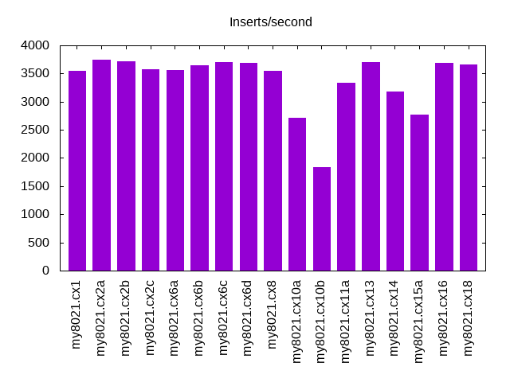
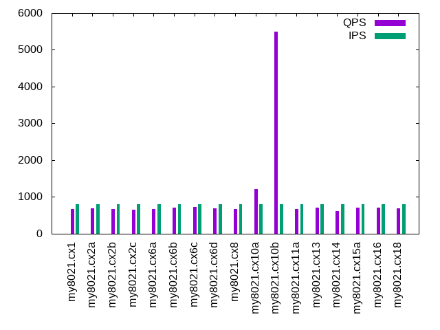

This is a report for the insert benchmark with 500M docs and 1 client(s). It is generated by scripts (bash, awk, sed) and Tufte might not be impressed. An overview of the insert benchmark is here and a short update is here. Below, by DBMS, I mean DBMS+version.config. An example is my8020.c10b40 where my means MySQL, 8020 is version 8.0.20 and c10b40 is the name for the configuration file. All configurations are stored here.
The test server is described here. Clients and the DBMS shared the same host running Ubuntu 18.04.5. All tests used MySQL 8.0.21. The configurations for MySQL are here.
The numbers are inserts/s for l.i0 and l.i1, indexed docs (or rows) /s for l.x and queries/s for q*.2. The values are the average rate over the entire test for inserts (IPS) and queries (QPS). The range of values for IPS and QPS is split into 3 parts: bottom 25%, middle 50%, top 25%. Values in the bottom 25% have a red background, values in the top 25% have a green background and values in the middle have no color. A gray background is used for values that can be ignored because the DBMS did not sustain the target insert rate. Red backgrounds are not used when the minimum value is within 80% of the max value.
| dbms | l.i0 | l.x | l.i1 | q100.2 | q200.2 | q400.2 | q600.2 | q800.2 | q1000.2 |
|---|---|---|---|---|---|---|---|---|---|
| my8021.cx1 | 83626 | 105262 | 3542 | 648 | 685 | 695 | 690 | 679 | 687 |
| my8021.cx2a | 84976 | 104645 | 3741 | 643 | 685 | 697 | 688 | 690 | 678 |
| my8021.cx2b | 84076 | 104079 | 3722 | 639 | 678 | 687 | 676 | 672 | 672 |
| my8021.cx2c | 82508 | 105618 | 3582 | 632 | 671 | 670 | 659 | 653 | 651 |
| my8021.cx6a | 82754 | 104253 | 3562 | 634 | 678 | 690 | 677 | 675 | 666 |
| my8021.cx6b | 85602 | 104602 | 3651 | 687 | 702 | 710 | 718 | 714 | 717 |
| my8021.cx6c | 83949 | 105041 | 3700 | 705 | 728 | 720 | 719 | 727 | 725 |
| my8021.cx6d | 82631 | 104711 | 3682 | 660 | 696 | 704 | 698 | 690 | 695 |
| my8021.cx8 | 70691 | 104079 | 3554 | 651 | 685 | 688 | 684 | 677 | 691 |
| my8021.cx10a | 80867 | 99701 | 2715 | 1483 | 1346 | 1267 | 1214 | 1214 | 1160 |
| my8021.cx10b | 79770 | 94021 | 1834 | 5602 | 5605 | 5579 | 5538 | 5486 | 5459 |
| my8021.cx11a | 83333 | 101957 | 3338 | 632 | 676 | 677 | 672 | 664 | 672 |
| my8021.cx13 | 82836 | 105484 | 3700 | 662 | 699 | 718 | 711 | 707 | 726 |
| my8021.cx14 | 83696 | 101584 | 3186 | 640 | 721 | 755 | 733 | 623 | 688 |
| my8021.cx15a | 82781 | 105019 | 2777 | 654 | 693 | 700 | 696 | 704 | 722 |
| my8021.cx16 | 81793 | 105063 | 3683 | 673 | 701 | 703 | 708 | 708 | 706 |
| my8021.cx18 | 81513 | 103284 | 3664 | 644 | 696 | 702 | 702 | 700 | 700 |
This lists the average rate of inserts/s for the tests that do inserts concurrent with queries. For such tests the query rate is listed in the table above. The read+write tests are setup so that the insert rate should match the target rate every second. Cells that are not at least 95% of the target have a red background to indicate a failure to satisfy the target.
| dbms | q100.2 | q200.2 | q400.2 | q600.2 | q800.2 | q1000.2 |
|---|---|---|---|---|---|---|
| my8021.cx1 | 100 | 200 | 399 | 599 | 799 | 999 |
| my8021.cx2a | 100 | 200 | 399 | 599 | 799 | 999 |
| my8021.cx2b | 100 | 200 | 399 | 599 | 799 | 999 |
| my8021.cx2c | 100 | 200 | 400 | 599 | 800 | 999 |
| my8021.cx6a | 100 | 200 | 400 | 599 | 799 | 998 |
| my8021.cx6b | 100 | 200 | 399 | 599 | 799 | 999 |
| my8021.cx6c | 100 | 200 | 400 | 599 | 799 | 999 |
| my8021.cx6d | 100 | 200 | 399 | 599 | 799 | 998 |
| my8021.cx8 | 100 | 200 | 400 | 599 | 799 | 998 |
| my8021.cx10a | 100 | 200 | 399 | 599 | 799 | 998 |
| my8021.cx10b | 100 | 200 | 399 | 599 | 799 | 998 |
| my8021.cx11a | 100 | 200 | 400 | 599 | 799 | 998 |
| my8021.cx13 | 100 | 200 | 400 | 599 | 799 | 999 |
| my8021.cx14 | 100 | 200 | 400 | 599 | 799 | 998 |
| my8021.cx15a | 100 | 200 | 399 | 599 | 799 | 999 |
| my8021.cx16 | 100 | 200 | 400 | 599 | 799 | 998 |
| my8021.cx18 | 100 | 200 | 400 | 599 | 799 | 999 |
| target | 100 | 200 | 400 | 600 | 800 | 1000 |
l.i0: load without secondary indexes. Graphs for performance per 1-second interval are here.
Average throughput:
Insert response time histogram: each cell has the percentage of responses that take <= the time in the header and max is the max response time in seconds. For the max column values in the top 25% of the range have a red background and in the bottom 25% of the range have a green background. The red background is not used when the min value is within 80% of the max value.
| dbms | 256us | 1ms | 4ms | 16ms | 64ms | 256ms | 1s | 4s | 16s | gt | max |
|---|---|---|---|---|---|---|---|---|---|---|---|
| my8021.cx1 | 99.584 | 0.384 | 0.030 | 0.002 | 0.123 | ||||||
| my8021.cx2a | nonzero | 99.597 | 0.371 | 0.030 | 0.003 | 0.121 | |||||
| my8021.cx2b | 99.587 | 0.380 | 0.030 | 0.002 | 0.179 | ||||||
| my8021.cx2c | 99.524 | 0.430 | 0.044 | 0.002 | 0.221 | ||||||
| my8021.cx6a | 99.577 | 0.381 | 0.040 | 0.002 | 0.217 | ||||||
| my8021.cx6b | nonzero | 99.610 | 0.359 | 0.030 | nonzero | 0.122 | |||||
| my8021.cx6c | nonzero | 99.573 | 0.388 | 0.037 | 0.002 | 0.204 | |||||
| my8021.cx6d | 99.578 | 0.387 | 0.034 | 0.002 | 0.199 | ||||||
| my8021.cx8 | 99.532 | 0.427 | 0.040 | 0.001 | 0.156 | ||||||
| my8021.cx10a | 99.577 | 0.370 | 0.051 | 0.002 | 0.248 | ||||||
| my8021.cx10b | 99.569 | 0.374 | 0.055 | 0.002 | nonzero | 0.267 | |||||
| my8021.cx11a | 99.575 | 0.372 | 0.050 | 0.003 | nonzero | 0.258 | |||||
| my8021.cx13 | 99.579 | 0.384 | 0.035 | 0.002 | 0.203 | ||||||
| my8021.cx14 | 99.586 | 0.360 | 0.051 | 0.003 | 0.255 | ||||||
| my8021.cx15a | 99.593 | 0.375 | 0.030 | 0.002 | 0.142 | ||||||
| my8021.cx16 | 99.576 | 0.389 | 0.033 | 0.002 | 0.153 | ||||||
| my8021.cx18 | 99.579 | 0.386 | 0.033 | 0.002 | 0.187 |
Performance metrics for the DBMS listed above. Some are normalized by throughput, others are not. Legend for results is here.
ips qps rps rkbps wkbps rpq rkbpq wkbpi csps cpups cspq cpupq dbgb1 dbgb2 rss maxop p50 p99 tag 83626 0 0 2 35833 0.000 0.000 0.428 20031 43.4 0.240 21 32.8 42.3 11.1 0.123 84049 74318 my8021.cx1 84976 0 0 2 35925 0.000 0.000 0.423 20063 43.3 0.236 20 32.8 53.3 11.1 0.121 85422 75025 my8021.cx2a 84076 0 0 2 34711 0.000 0.000 0.413 20055 43.4 0.239 21 32.8 73.3 11.1 0.179 84610 72120 my8021.cx2b 82508 0 0 2 35817 0.000 0.000 0.434 19855 42.8 0.241 21 32.8 35.3 11.1 0.221 83011 72156 my8021.cx2c 82754 0 0 2 34214 0.000 0.000 0.413 19918 43.0 0.241 21 32.8 73.3 11.1 0.217 83243 72740 my8021.cx6a 85602 0 0 2 35771 0.000 0.000 0.418 20053 43.3 0.234 20 32.8 73.3 11.1 0.122 86007 79867 my8021.cx6b 83949 0 0 2 35501 0.000 0.000 0.423 20119 43.0 0.240 20 32.8 73.3 11.1 0.204 84445 72860 my8021.cx6c 82631 0 0 2 34151 0.000 0.000 0.413 19996 43.0 0.242 21 32.8 73.3 11.1 0.199 83207 70625 my8021.cx6d 70691 0 0 1 29372 0.000 0.000 0.415 17671 40.4 0.250 23 32.8 73.3 11.1 0.156 70825 64931 my8021.cx8 80867 0 0 1 32926 0.000 0.000 0.407 20452 42.8 0.253 21 33.2 73.7 11.7 0.248 81380 69324 my8021.cx10a 79770 0 0 0 31958 0.000 0.000 0.401 21812 42.7 0.273 21 34.0 74.6 13.0 0.267 80255 70158 my8021.cx10b 83333 0 0 2 34395 0.000 0.000 0.413 19872 42.9 0.238 21 32.8 73.3 10.9 0.258 83910 67550 my8021.cx11a 82836 0 0 2 29382 0.000 0.000 0.355 19936 43.2 0.241 21 32.8 73.3 11.0 0.203 83308 73128 my8021.cx13 83696 0 0 2 34548 0.000 0.000 0.413 19716 43.3 0.236 21 32.8 73.3 11.1 0.255 84307 69537 my8021.cx14 82781 0 0 1 34335 0.000 0.000 0.415 20195 43.0 0.244 21 32.8 73.3 11.2 0.142 83269 73615 my8021.cx15a 81793 0 0 2 33812 0.000 0.000 0.413 20289 42.7 0.248 21 32.8 73.3 11.1 0.153 82224 72739 my8021.cx16 81513 0 0 2 33708 0.000 0.000 0.414 20100 42.9 0.247 21 32.8 73.3 11.1 0.187 82010 73038 my8021.cx18
l.x: create secondary indexes.
Average throughput:
Performance metrics for the DBMS listed above. Some are normalized by throughput, others are not. Legend for results is here.
ips qps rps rkbps wkbps rpq rkbpq wkbpi csps cpups cspq cpupq dbgb1 dbgb2 rss maxop p50 p99 tag 105262 0 478 92613 129570 0.005 0.880 1.231 6626 23.1 0.063 9 73.3 82.8 11.2 0.015 NA NA my8021.cx1 104645 0 476 92165 129010 0.005 0.881 1.233 6606 23.0 0.063 9 73.3 93.8 11.2 0.013 NA NA my8021.cx2a 104079 0 472 91670 130471 0.005 0.881 1.254 6679 23.0 0.064 9 73.3 113.8 11.2 0.012 NA NA my8021.cx2b 105618 0 472 86441 127389 0.004 0.818 1.206 6482 23.1 0.061 9 73.3 75.8 11.2 0.016 NA NA my8021.cx2c 104253 0 473 91788 128592 0.005 0.880 1.233 6746 22.8 0.065 9 73.3 113.8 11.2 0.026 NA NA my8021.cx6a 104602 0 475 92114 127917 0.005 0.881 1.223 6546 23.1 0.063 9 73.3 113.8 11.2 0.007 NA NA my8021.cx6b 105041 0 477 92479 129704 0.005 0.880 1.235 6472 23.1 0.062 9 73.3 113.8 11.2 0.017 NA NA my8021.cx6c 104711 0 475 91996 129659 0.005 0.879 1.238 6789 22.8 0.065 9 73.3 113.8 11.2 0.021 NA NA my8021.cx6d 104079 0 473 91687 127448 0.005 0.881 1.225 6638 22.7 0.064 9 73.3 113.8 11.2 0.019 NA NA my8021.cx8 99701 0 804 88476 124314 0.008 0.887 1.247 11721 23.2 0.118 9 74.1 114.6 11.8 0.019 NA NA my8021.cx10a 94021 0 1452 85124 119048 0.015 0.905 1.266 22073 23.8 0.235 10 75.8 116.4 13.0 0.020 NA NA my8021.cx10b 101957 0 464 90300 124878 0.005 0.886 1.225 6539 22.6 0.064 9 73.3 113.8 11.2 0.014 NA NA my8021.cx11a 105484 0 479 92687 121033 0.005 0.879 1.147 7074 23.6 0.067 9 73.3 113.8 11.2 0.013 NA NA my8021.cx13 101584 0 461 89397 124836 0.005 0.880 1.229 7299 22.5 0.072 9 73.3 113.8 11.2 0.015 NA NA my8021.cx14 105019 0 476 91841 129230 0.005 0.875 1.231 4600 22.4 0.044 9 73.3 113.8 11.2 0.015 NA NA my8021.cx15a 105063 0 477 92478 128828 0.005 0.880 1.226 6777 22.9 0.065 9 73.3 113.8 11.2 0.010 NA NA my8021.cx16 103284 0 468 90856 127591 0.005 0.880 1.235 6691 22.9 0.065 9 73.3 113.8 11.2 0.028 NA NA my8021.cx18
l.i1: continue load after secondary indexes created. Graphs for performance per 1-second interval are here.
Average throughput:
Insert response time histogram: each cell has the percentage of responses that take <= the time in the header and max is the max response time in seconds. For the max column values in the top 25% of the range have a red background and in the bottom 25% of the range have a green background. The red background is not used when the min value is within 80% of the max value.
| dbms | 256us | 1ms | 4ms | 16ms | 64ms | 256ms | 1s | 4s | 16s | gt | max |
|---|---|---|---|---|---|---|---|---|---|---|---|
| my8021.cx1 | 52.978 | 28.957 | 12.857 | 4.995 | 0.212 | 0.534 | |||||
| my8021.cx2a | 54.241 | 27.767 | 13.069 | 4.888 | 0.036 | 0.630 | |||||
| my8021.cx2b | 53.855 | 28.312 | 12.840 | 4.949 | 0.043 | 0.417 | |||||
| my8021.cx2c | 52.111 | 29.063 | 13.671 | 5.091 | 0.062 | 0.694 | |||||
| my8021.cx6a | 52.555 | 29.221 | 12.954 | 5.167 | 0.103 | 0.464 | |||||
| my8021.cx6b | 63.400 | 18.167 | 13.237 | 5.103 | 0.092 | 0.782 | |||||
| my8021.cx6c | 65.439 | 16.107 | 13.303 | 5.005 | 0.147 | 0.554 | |||||
| my8021.cx6d | 59.320 | 22.627 | 12.951 | 5.034 | 0.067 | 0.445 | |||||
| my8021.cx8 | 57.234 | 24.148 | 13.318 | 5.210 | 0.091 | 0.706 | |||||
| my8021.cx10a | 42.740 | 25.416 | 25.451 | 6.386 | 0.006 | 0.743 | |||||
| my8021.cx10b | 1.676 | 41.808 | 48.840 | 7.673 | 0.003 | 0.314 | |||||
| my8021.cx11a | 58.618 | 22.035 | 13.612 | 5.365 | 0.370 | 0.663 | |||||
| my8021.cx13 | 58.367 | 23.571 | 13.001 | 4.988 | 0.074 | 0.739 | |||||
| my8021.cx14 | 59.867 | 22.107 | 11.488 | 6.166 | 0.372 | 0.616 | |||||
| my8021.cx15a | 57.488 | 24.790 | 11.384 | 5.070 | 1.268 | 0.661 | |||||
| my8021.cx16 | 58.450 | 23.465 | 12.984 | 5.038 | 0.063 | 0.400 | |||||
| my8021.cx18 | 57.803 | 24.094 | 12.965 | 5.077 | 0.061 | 0.659 |
Performance metrics for the DBMS listed above. Some are normalized by throughput, others are not. Legend for results is here.
ips qps rps rkbps wkbps rpq rkbpq wkbpi csps cpups cspq cpupq dbgb1 dbgb2 rss maxop p50 p99 tag 3542 0 1774 28388 92418 0.501 8.014 26.090 21460 26.8 6.058 303 101.4 112.9 11.2 0.534 999 150 my8021.cx1 3741 0 1873 29968 95359 0.501 8.010 25.490 21544 27.6 5.759 295 101.4 123.9 11.2 0.630 1100 350 my8021.cx2a 3722 0 1862 29792 92484 0.500 8.005 24.851 21242 27.7 5.708 298 101.4 143.9 11.2 0.417 1050 350 my8021.cx2b 3582 0 1792 28675 103209 0.500 8.006 28.816 22093 27.8 6.169 310 101.4 105.9 11.2 0.694 1099 350 my8021.cx2c 3562 0 1782 28518 88529 0.500 8.005 24.850 20561 27.7 5.771 311 101.4 143.9 11.2 0.464 1049 350 my8021.cx6a 3651 0 1888 30205 104605 0.517 8.273 28.652 22222 28.3 6.087 310 101.4 143.8 11.2 0.782 1049 350 my8021.cx6b 3700 0 1982 31712 112995 0.536 8.572 30.543 23151 28.6 6.258 309 101.4 143.8 11.2 0.554 1000 350 my8021.cx6c 3682 0 1867 29868 98655 0.507 8.112 26.795 21774 28.0 5.914 304 101.4 143.9 11.2 0.445 1049 350 my8021.cx6d 3554 0 1804 28870 95678 0.508 8.124 26.924 21089 28.0 5.935 315 101.4 143.9 11.2 0.706 1049 350 my8021.cx8 2715 0 2618 20943 66673 0.964 7.714 24.556 25712 27.9 9.470 411 101.7 143.7 11.8 0.743 1099 400 my8021.cx10a 1834 0 3446 13782 42578 1.879 7.514 23.214 30222 28.2 16.478 615 103.4 144.6 13.0 0.314 1249 449 my8021.cx10b 3338 0 1698 27169 89926 0.509 8.140 26.942 20246 27.8 6.066 333 101.4 143.9 11.2 0.663 949 350 my8021.cx11a 3700 0 1866 29848 57526 0.504 8.068 15.550 22677 26.9 6.130 291 101.4 143.8 11.2 0.739 1050 150 my8021.cx13 3186 0 1620 25916 85696 0.508 8.135 26.900 25181 27.6 7.904 347 101.4 143.8 11.2 0.616 799 300 my8021.cx14 2777 0 1417 22667 78528 0.510 8.162 28.278 22972 20.9 8.272 301 101.4 143.9 11.2 0.661 600 100 my8021.cx15a 3683 0 1870 29924 99037 0.508 8.124 26.889 21829 28.0 5.927 304 101.4 143.9 11.2 0.400 1049 350 my8021.cx16 3664 0 1860 29756 97901 0.508 8.121 26.717 21683 28.1 5.917 307 101.4 143.9 11.2 0.659 1049 350 my8021.cx18
q100.2: range queries with 100 insert/s per client, 2nd loop. Graphs for performance per 1-second interval are here.
Average throughput:
Query response time histogram: each cell has the percentage of responses that take <= the time in the header and max is the max response time in seconds. For max values in the top 25% of the range have a red background and in the bottom 25% of the range have a green background. The red background is not used when the min value is within 80% of the max value.
| dbms | 256us | 1ms | 4ms | 16ms | 64ms | 256ms | 1s | 4s | 16s | gt | max |
|---|---|---|---|---|---|---|---|---|---|---|---|
| my8021.cx1 | 3.521 | 29.008 | 66.739 | 0.676 | 0.056 | 0.029 | |||||
| my8021.cx2a | 3.186 | 27.578 | 68.495 | 0.674 | 0.067 | 0.034 | |||||
| my8021.cx2b | 3.184 | 28.330 | 67.749 | 0.653 | 0.085 | 0.038 | |||||
| my8021.cx2c | 3.275 | 27.100 | 68.869 | 0.646 | 0.110 | 0.034 | |||||
| my8021.cx6a | 3.246 | 25.959 | 70.348 | 0.336 | 0.111 | 0.049 | |||||
| my8021.cx6b | 3.336 | 35.154 | 61.004 | 0.381 | 0.126 | 0.048 | |||||
| my8021.cx6c | 3.870 | 35.382 | 60.191 | 0.416 | 0.141 | 0.045 | |||||
| my8021.cx6d | 3.481 | 31.309 | 64.781 | 0.305 | 0.123 | 0.049 | |||||
| my8021.cx8 | 3.422 | 31.281 | 64.824 | 0.340 | 0.132 | 0.036 | |||||
| my8021.cx10a | 22.108 | 61.886 | 15.888 | 0.099 | 0.019 | 0.030 | |||||
| my8021.cx10b | 99.372 | 0.626 | 0.002 | 0.001 | 0.014 | ||||||
| my8021.cx11a | 3.217 | 28.566 | 67.713 | 0.365 | 0.139 | 0.039 | |||||
| my8021.cx13 | 3.751 | 30.222 | 65.520 | 0.465 | 0.043 | 0.050 | |||||
| my8021.cx14 | 3.296 | 29.871 | 66.499 | 0.179 | 0.155 | 0.051 | |||||
| my8021.cx15a | 3.592 | 30.408 | 65.335 | 0.656 | 0.010 | 0.022 | |||||
| my8021.cx16 | 3.314 | 33.045 | 63.188 | 0.372 | 0.081 | 0.028 | |||||
| my8021.cx18 | 3.304 | 30.028 | 66.116 | 0.385 | 0.167 | 0.053 |
Insert response time histogram: each cell has the percentage of responses that take <= the time in the header and max is the max response time in seconds. For max values in the top 25% of the range have a red background and in the bottom 25% of the range have a green background. The red background is not used when the min value is within 80% of the max value.
| dbms | 256us | 1ms | 4ms | 16ms | 64ms | 256ms | 1s | 4s | 16s | gt | max |
|---|---|---|---|---|---|---|---|---|---|---|---|
| my8021.cx1 | 25.444 | 74.556 | 0.059 | ||||||||
| my8021.cx2a | 21.111 | 78.889 | 0.058 | ||||||||
| my8021.cx2b | 22.306 | 77.667 | 0.028 | 0.065 | |||||||
| my8021.cx2c | 23.806 | 76.194 | 0.064 | ||||||||
| my8021.cx6a | 23.889 | 76.111 | 0.048 | ||||||||
| my8021.cx6b | 41.972 | 58.000 | 0.028 | 0.068 | |||||||
| my8021.cx6c | 53.806 | 46.194 | 0.052 | ||||||||
| my8021.cx6d | 31.333 | 68.667 | 0.046 | ||||||||
| my8021.cx8 | 30.611 | 69.389 | 0.047 | ||||||||
| my8021.cx10a | 21.944 | 78.056 | 0.054 | ||||||||
| my8021.cx10b | 17.361 | 73.000 | 9.639 | 0.028 | |||||||
| my8021.cx11a | 25.611 | 74.389 | 0.059 | ||||||||
| my8021.cx13 | 33.861 | 66.139 | 0.058 | ||||||||
| my8021.cx14 | 26.333 | 73.667 | 0.062 | ||||||||
| my8021.cx15a | 27.472 | 72.528 | 0.050 | ||||||||
| my8021.cx16 | 30.889 | 69.111 | 0.043 | ||||||||
| my8021.cx18 | 27.583 | 72.417 | 0.055 |
Performance metrics for the DBMS listed above. Some are normalized by throughput, others are not. Legend for results is here.
ips qps rps rkbps wkbps rpq rkbpq wkbpi csps cpups cspq cpupq dbgb1 dbgb2 rss maxop p50 p99 tag 100 648 2477 39637 7106 3.821 61.131 71.204 10685 21.2 16.479 1308 101.4 112.9 11.2 0.029 623 527 my8021.cx1 100 643 2462 39398 7144 3.827 61.234 71.582 10646 21.2 16.547 1318 101.4 123.9 11.2 0.034 623 527 my8021.cx2a 100 639 2448 39169 7157 3.833 61.325 71.717 10607 21.2 16.607 1328 101.4 143.9 11.2 0.038 623 512 my8021.cx2b 100 632 2417 38669 6944 3.824 61.185 69.583 10498 21.2 16.610 1342 101.4 105.9 11.2 0.034 607 511 my8021.cx2c 100 634 2428 38852 6805 3.827 61.232 68.185 10411 21.2 16.408 1336 101.4 143.9 11.2 0.049 607 527 my8021.cx6a 100 687 2733 43733 9745 3.976 63.621 97.644 11252 21.2 16.369 1234 101.4 143.9 11.2 0.048 671 527 my8021.cx6b 100 705 2902 46437 13315 4.117 65.868 133.415 11713 21.3 16.614 1209 101.4 143.8 11.2 0.045 687 543 my8021.cx6c 100 660 2565 41047 7846 3.889 62.230 78.619 10778 21.2 16.341 1286 101.4 143.9 11.2 0.049 639 527 my8021.cx6d 100 651 2527 40437 7796 3.884 62.144 78.116 10679 21.2 16.412 1303 101.4 143.9 11.2 0.036 623 527 my8021.cx8 100 1483 2080 16639 5479 1.403 11.221 54.896 12297 21.2 8.293 572 101.8 143.8 11.8 0.030 1375 911 my8021.cx10a 100 5602 80 320 813 0.014 0.057 8.143 22513 25.9 4.019 185 103.6 144.8 13.0 0.014 5610 5482 my8021.cx10b 100 632 2479 39667 7749 3.920 62.715 77.640 10513 21.4 16.621 1353 101.4 143.9 11.2 0.039 607 512 my8021.cx11a 100 662 2568 41082 3951 3.876 62.020 39.584 10734 21.1 16.204 1274 101.4 143.9 11.2 0.050 639 527 my8021.cx13 100 640 2490 39837 7757 3.887 62.197 77.729 10769 21.3 16.814 1330 101.4 143.9 11.2 0.051 607 512 my8021.cx14 100 654 2515 40235 7655 3.846 61.530 76.703 10785 21.5 16.493 1315 101.4 143.9 11.2 0.022 624 527 my8021.cx15a 100 673 2614 41817 7919 3.881 62.098 79.352 10957 21.2 16.272 1259 101.4 143.9 11.2 0.028 655 527 my8021.cx16 100 644 2503 40053 7722 3.887 62.184 77.370 10586 21.1 16.435 1310 101.4 143.9 11.2 0.053 623 96 my8021.cx18
q200.2: range queries with 200 insert/s per client, 2nd loop. Graphs for performance per 1-second interval are here.
Average throughput:
Query response time histogram: each cell has the percentage of responses that take <= the time in the header and max is the max response time in seconds. For max values in the top 25% of the range have a red background and in the bottom 25% of the range have a green background. The red background is not used when the min value is within 80% of the max value.
| dbms | 256us | 1ms | 4ms | 16ms | 64ms | 256ms | 1s | 4s | 16s | gt | max |
|---|---|---|---|---|---|---|---|---|---|---|---|
| my8021.cx1 | 4.167 | 32.470 | 62.681 | 0.590 | 0.093 | 0.051 | |||||
| my8021.cx2a | 4.019 | 32.345 | 62.964 | 0.586 | 0.087 | nonzero | nonzero | 0.262 | |||
| my8021.cx2b | 3.904 | 31.729 | 63.703 | 0.567 | 0.098 | 0.037 | |||||
| my8021.cx2c | 4.055 | 31.458 | 63.806 | 0.554 | 0.129 | 0.041 | |||||
| my8021.cx6a | 3.869 | 31.304 | 64.460 | 0.246 | 0.122 | 0.052 | |||||
| my8021.cx6b | 4.116 | 34.375 | 61.063 | 0.319 | 0.127 | nonzero | 0.084 | ||||
| my8021.cx6c | 4.159 | 37.156 | 58.177 | 0.374 | 0.133 | 0.044 | |||||
| my8021.cx6d | 3.858 | 33.813 | 61.939 | 0.285 | 0.106 | 0.036 | |||||
| my8021.cx8 | 4.317 | 34.145 | 61.140 | 0.268 | 0.129 | nonzero | 0.070 | ||||
| my8021.cx10a | 16.571 | 65.301 | 17.988 | 0.122 | 0.019 | 0.030 | |||||
| my8021.cx10b | 99.245 | 0.752 | 0.002 | nonzero | 0.015 | ||||||
| my8021.cx11a | 3.852 | 32.414 | 63.330 | 0.268 | 0.136 | 0.039 | |||||
| my8021.cx13 | 4.244 | 33.156 | 62.190 | 0.374 | 0.037 | nonzero | 0.163 | ||||
| my8021.cx14 | 4.549 | 35.159 | 59.707 | 0.544 | 0.041 | nonzero | 0.249 | ||||
| my8021.cx15a | 4.699 | 33.207 | 61.508 | 0.576 | 0.010 | nonzero | 0.101 | ||||
| my8021.cx16 | 4.427 | 33.817 | 61.351 | 0.299 | 0.106 | 0.049 | |||||
| my8021.cx18 | 4.172 | 32.689 | 62.752 | 0.282 | 0.105 | 0.032 |
Insert response time histogram: each cell has the percentage of responses that take <= the time in the header and max is the max response time in seconds. For max values in the top 25% of the range have a red background and in the bottom 25% of the range have a green background. The red background is not used when the min value is within 80% of the max value.
| dbms | 256us | 1ms | 4ms | 16ms | 64ms | 256ms | 1s | 4s | 16s | gt | max |
|---|---|---|---|---|---|---|---|---|---|---|---|
| my8021.cx1 | 0.056 | 73.194 | 26.750 | 0.042 | |||||||
| my8021.cx2a | 0.111 | 72.833 | 27.056 | 0.053 | |||||||
| my8021.cx2b | 0.111 | 74.139 | 25.750 | 0.050 | |||||||
| my8021.cx2c | 0.125 | 71.958 | 27.917 | 0.051 | |||||||
| my8021.cx6a | 0.028 | 72.986 | 26.972 | 0.014 | 0.067 | ||||||
| my8021.cx6b | 3.639 | 93.597 | 2.764 | 0.051 | |||||||
| my8021.cx6c | 9.750 | 89.250 | 1.000 | 0.038 | |||||||
| my8021.cx6d | 0.875 | 90.403 | 8.722 | 0.035 | |||||||
| my8021.cx8 | 0.833 | 89.750 | 9.403 | 0.014 | 0.075 | ||||||
| my8021.cx10a | 78.694 | 21.306 | 0.045 | ||||||||
| my8021.cx10b | 24.569 | 70.833 | 4.583 | 0.014 | 0.105 | ||||||
| my8021.cx11a | 1.278 | 90.375 | 8.347 | 0.040 | |||||||
| my8021.cx13 | 1.097 | 90.792 | 8.111 | 0.040 | |||||||
| my8021.cx14 | 0.750 | 90.083 | 9.139 | 0.028 | 0.214 | ||||||
| my8021.cx15a | 1.278 | 90.167 | 8.556 | 0.035 | |||||||
| my8021.cx16 | 0.972 | 89.764 | 9.264 | 0.040 | |||||||
| my8021.cx18 | 0.847 | 88.319 | 10.833 | 0.039 |
Performance metrics for the DBMS listed above. Some are normalized by throughput, others are not. Legend for results is here.
ips qps rps rkbps wkbps rpq rkbpq wkbpi csps cpups cspq cpupq dbgb1 dbgb2 rss maxop p50 p99 tag 200 685 2640 42249 8075 3.855 61.686 40.434 11752 21.2 17.159 1238 101.5 113.0 11.2 0.051 671 527 my8021.cx1 200 685 2632 42110 8064 3.840 61.447 40.378 11726 21.1 17.111 1232 101.5 124.0 11.2 0.262 671 543 my8021.cx2a 200 678 2615 41842 7989 3.858 61.732 40.006 11686 21.2 17.240 1251 101.5 144.0 11.2 0.037 655 527 my8021.cx2b 200 671 2590 41436 8440 3.861 61.771 42.286 11636 21.1 17.346 1258 101.5 106.0 11.2 0.041 655 527 my8021.cx2c 200 678 2610 41761 7598 3.849 61.577 38.049 11528 21.1 16.998 1244 101.5 144.0 11.2 0.052 655 528 my8021.cx6a 200 702 2731 43695 10156 3.891 62.262 50.856 11803 21.4 16.818 1220 101.5 143.9 11.2 0.084 687 544 my8021.cx6b 200 728 2890 46246 13626 3.970 63.517 68.232 12255 21.5 16.831 1181 101.5 143.9 11.2 0.044 719 559 my8021.cx6c 200 696 2685 42953 8323 3.858 61.723 41.656 11703 21.2 16.816 1219 101.5 144.0 11.2 0.036 671 543 my8021.cx6d 200 685 2643 42282 8132 3.857 61.708 40.721 11564 21.2 16.876 1238 101.5 144.0 11.2 0.070 671 543 my8021.cx8 200 1346 2103 16826 5167 1.562 12.500 25.889 12318 21.8 9.151 648 101.8 143.8 11.8 0.030 1262 879 my8021.cx10a 200 5605 105 418 1333 0.019 0.075 6.677 22747 26.2 4.058 187 103.9 145.2 13.0 0.015 5610 5482 my8021.cx10b 200 676 2635 42156 8094 3.898 62.370 40.528 11518 21.3 17.041 1261 101.5 144.0 11.2 0.039 655 527 my8021.cx11a 200 699 2701 43211 4209 3.866 61.854 21.075 11673 21.3 16.710 1220 101.5 143.9 11.2 0.163 672 543 my8021.cx13 200 721 2777 44434 196412 3.853 61.645 983.535 12261 20.9 17.011 1160 101.5 143.9 11.2 0.249 704 447 my8021.cx14 200 693 2650 42405 8169 3.826 61.216 40.904 11757 21.3 16.972 1230 101.5 143.9 11.2 0.101 671 543 my8021.cx15a 200 701 2704 43258 8280 3.856 61.692 41.461 11771 21.1 16.787 1204 101.5 144.0 11.2 0.049 687 543 my8021.cx16 200 696 2690 43032 8219 3.863 61.801 41.156 11747 21.3 16.870 1224 101.5 143.9 11.2 0.032 671 543 my8021.cx18
q400.2: range queries with 400 insert/s per client, 2nd loop. Graphs for performance per 1-second interval are here.
Average throughput:
Query response time histogram: each cell has the percentage of responses that take <= the time in the header and max is the max response time in seconds. For max values in the top 25% of the range have a red background and in the bottom 25% of the range have a green background. The red background is not used when the min value is within 80% of the max value.
| dbms | 256us | 1ms | 4ms | 16ms | 64ms | 256ms | 1s | 4s | 16s | gt | max |
|---|---|---|---|---|---|---|---|---|---|---|---|
| my8021.cx1 | 6.551 | 30.106 | 62.659 | 0.556 | 0.129 | 0.051 | |||||
| my8021.cx2a | 6.708 | 29.698 | 62.882 | 0.587 | 0.124 | 0.039 | |||||
| my8021.cx2b | 6.409 | 29.809 | 63.067 | 0.577 | 0.138 | 0.040 | |||||
| my8021.cx2c | 6.428 | 28.283 | 64.562 | 0.559 | 0.167 | 0.050 | |||||
| my8021.cx6a | 6.340 | 29.150 | 64.123 | 0.250 | 0.137 | 0.047 | |||||
| my8021.cx6b | 6.484 | 31.262 | 61.818 | 0.301 | 0.134 | 0.043 | |||||
| my8021.cx6c | 6.558 | 32.813 | 60.134 | 0.354 | 0.141 | nonzero | 0.139 | ||||
| my8021.cx6d | 6.847 | 30.470 | 62.268 | 0.284 | 0.131 | 0.045 | |||||
| my8021.cx8 | 6.831 | 30.735 | 62.009 | 0.282 | 0.143 | 0.047 | |||||
| my8021.cx10a | 17.078 | 57.573 | 25.180 | 0.137 | 0.031 | nonzero | 0.073 | ||||
| my8021.cx10b | 98.948 | 1.048 | 0.003 | nonzero | 0.015 | ||||||
| my8021.cx11a | 6.643 | 28.694 | 64.231 | 0.279 | 0.152 | 0.060 | |||||
| my8021.cx13 | 7.250 | 30.583 | 61.742 | 0.358 | 0.067 | 0.043 | |||||
| my8021.cx14 | 7.644 | 32.920 | 59.091 | 0.304 | 0.041 | 0.030 | |||||
| my8021.cx15a | 7.463 | 30.707 | 61.117 | 0.667 | 0.045 | 0.051 | |||||
| my8021.cx16 | 6.700 | 29.844 | 63.047 | 0.286 | 0.123 | 0.039 | |||||
| my8021.cx18 | 6.876 | 29.714 | 63.012 | 0.267 | 0.130 | 0.047 |
Insert response time histogram: each cell has the percentage of responses that take <= the time in the header and max is the max response time in seconds. For max values in the top 25% of the range have a red background and in the bottom 25% of the range have a green background. The red background is not used when the min value is within 80% of the max value.
| dbms | 256us | 1ms | 4ms | 16ms | 64ms | 256ms | 1s | 4s | 16s | gt | max |
|---|---|---|---|---|---|---|---|---|---|---|---|
| my8021.cx1 | 8.535 | 86.486 | 4.979 | 0.042 | |||||||
| my8021.cx2a | 9.917 | 85.208 | 4.875 | 0.041 | |||||||
| my8021.cx2b | 8.507 | 87.104 | 4.389 | 0.043 | |||||||
| my8021.cx2c | 9.431 | 85.826 | 4.743 | 0.052 | |||||||
| my8021.cx6a | 8.660 | 87.062 | 4.278 | 0.049 | |||||||
| my8021.cx6b | 21.306 | 77.632 | 1.062 | 0.044 | |||||||
| my8021.cx6c | 31.257 | 68.007 | 0.729 | 0.007 | 0.089 | ||||||
| my8021.cx6d | 17.472 | 81.118 | 1.410 | 0.044 | |||||||
| my8021.cx8 | 16.014 | 82.049 | 1.938 | 0.044 | |||||||
| my8021.cx10a | 0.111 | 94.333 | 5.542 | 0.014 | 0.225 | ||||||
| my8021.cx10b | 42.097 | 56.285 | 1.604 | 0.014 | 0.105 | ||||||
| my8021.cx11a | 17.688 | 81.292 | 1.021 | 0.045 | |||||||
| my8021.cx13 | 16.160 | 82.896 | 0.944 | 0.037 | |||||||
| my8021.cx14 | 16.354 | 82.826 | 0.819 | 0.031 | |||||||
| my8021.cx15a | 17.375 | 81.556 | 1.069 | 0.031 | |||||||
| my8021.cx16 | 16.597 | 82.500 | 0.903 | 0.040 | |||||||
| my8021.cx18 | 15.069 | 83.750 | 1.181 | 0.052 |
Performance metrics for the DBMS listed above. Some are normalized by throughput, others are not. Legend for results is here.
ips qps rps rkbps wkbps rpq rkbpq wkbpi csps cpups cspq cpupq dbgb1 dbgb2 rss maxop p50 p99 tag 399 695 2720 43527 11019 3.913 62.602 27.597 12614 21.7 18.142 1248 101.6 113.1 11.2 0.051 672 543 my8021.cx1 399 697 2726 43609 11018 3.910 62.558 27.593 12690 21.8 18.203 1251 101.6 124.1 11.2 0.039 671 543 my8021.cx2a 399 687 2682 42917 10955 3.907 62.507 27.435 12536 21.6 18.258 1258 101.6 144.1 11.2 0.040 671 528 my8021.cx2b 400 670 2617 41878 13049 3.907 62.514 32.663 12554 21.8 18.740 1302 101.6 106.1 11.2 0.050 655 528 my8021.cx2c 400 690 2700 43198 10135 3.912 62.597 25.368 12416 21.7 17.991 1258 101.6 144.1 11.2 0.047 671 543 my8021.cx6a 399 710 2771 44343 12766 3.905 62.472 31.970 12571 22.0 17.710 1240 101.6 144.0 11.2 0.043 688 543 my8021.cx6b 400 720 2846 45536 16248 3.952 63.235 40.672 12782 22.1 17.750 1228 101.6 144.0 11.2 0.139 703 559 my8021.cx6c 399 704 2734 43750 10923 3.887 62.190 27.355 12506 21.8 17.777 1240 101.6 144.1 11.2 0.045 687 544 my8021.cx6d 400 688 2679 42861 10766 3.894 62.298 26.949 12305 21.8 17.886 1267 101.6 144.1 11.2 0.047 671 543 my8021.cx8 399 1267 2207 17654 5750 1.741 13.931 14.401 12765 22.2 10.073 701 102.0 144.2 11.8 0.073 1215 831 my8021.cx10a 399 5579 132 529 2209 0.024 0.095 5.533 23269 26.6 4.170 191 104.4 146.1 13.0 0.015 5579 5452 my8021.cx10b 400 677 2663 42612 10724 3.934 62.942 26.843 12232 21.8 18.068 1288 101.6 144.1 11.2 0.060 655 543 my8021.cx11a 400 718 2789 44622 5678 3.886 62.174 14.214 12615 21.9 17.577 1221 101.6 144.0 11.2 0.043 688 559 my8021.cx13 400 755 2931 46889 11149 3.882 62.113 27.907 13377 21.7 17.721 1150 101.6 144.0 11.2 0.030 735 575 my8021.cx14 399 700 2707 43306 10800 3.864 61.831 27.047 12634 21.8 18.039 1245 101.6 144.0 11.2 0.051 687 544 my8021.cx15a 400 703 2735 43763 10896 3.891 62.251 27.274 12511 21.9 17.796 1246 101.6 144.1 11.2 0.039 687 559 my8021.cx16 400 702 2730 43686 10881 3.891 62.258 27.236 12476 21.8 17.780 1243 101.6 144.0 11.2 0.047 672 559 my8021.cx18
q600.2: range queries with 600 insert/s per client, 2nd loop. Graphs for performance per 1-second interval are here.
Average throughput:
Query response time histogram: each cell has the percentage of responses that take <= the time in the header and max is the max response time in seconds. For max values in the top 25% of the range have a red background and in the bottom 25% of the range have a green background. The red background is not used when the min value is within 80% of the max value.
| dbms | 256us | 1ms | 4ms | 16ms | 64ms | 256ms | 1s | 4s | 16s | gt | max |
|---|---|---|---|---|---|---|---|---|---|---|---|
| my8021.cx1 | 7.399 | 29.047 | 62.780 | 0.603 | 0.170 | nonzero | 0.079 | ||||
| my8021.cx2a | 6.684 | 28.817 | 63.751 | 0.596 | 0.152 | nonzero | 0.076 | ||||
| my8021.cx2b | 6.734 | 28.234 | 64.287 | 0.587 | 0.158 | 0.001 | 0.075 | ||||
| my8021.cx2c | 7.270 | 26.900 | 65.016 | 0.616 | 0.197 | nonzero | 0.081 | ||||
| my8021.cx6a | 7.007 | 27.275 | 65.309 | 0.257 | 0.152 | nonzero | 0.094 | ||||
| my8021.cx6b | 7.978 | 30.547 | 61.010 | 0.326 | 0.139 | 0.058 | |||||
| my8021.cx6c | 7.166 | 31.935 | 60.348 | 0.404 | 0.146 | 0.062 | |||||
| my8021.cx6d | 7.441 | 28.893 | 63.243 | 0.282 | 0.141 | 0.045 | |||||
| my8021.cx8 | 7.580 | 28.769 | 63.217 | 0.285 | 0.149 | 0.048 | |||||
| my8021.cx10a | 16.848 | 54.016 | 28.927 | 0.139 | 0.070 | nonzero | 0.078 | ||||
| my8021.cx10b | 98.739 | 1.258 | 0.002 | nonzero | 0.015 | ||||||
| my8021.cx11a | 7.394 | 27.370 | 64.791 | 0.283 | 0.162 | nonzero | 0.064 | ||||
| my8021.cx13 | 7.887 | 29.082 | 62.598 | 0.337 | 0.095 | nonzero | 0.160 | ||||
| my8021.cx14 | 8.514 | 30.704 | 60.338 | 0.306 | 0.137 | 0.051 | |||||
| my8021.cx15a | 8.039 | 29.197 | 61.957 | 0.771 | 0.037 | nonzero | 0.149 | ||||
| my8021.cx16 | 7.570 | 29.267 | 62.738 | 0.293 | 0.133 | 0.041 | |||||
| my8021.cx18 | 7.780 | 28.362 | 63.452 | 0.264 | 0.142 | 0.047 |
Insert response time histogram: each cell has the percentage of responses that take <= the time in the header and max is the max response time in seconds. For max values in the top 25% of the range have a red background and in the bottom 25% of the range have a green background. The red background is not used when the min value is within 80% of the max value.
| dbms | 256us | 1ms | 4ms | 16ms | 64ms | 256ms | 1s | 4s | 16s | gt | max |
|---|---|---|---|---|---|---|---|---|---|---|---|
| my8021.cx1 | 13.606 | 81.532 | 4.843 | 0.019 | 0.147 | ||||||
| my8021.cx2a | 14.690 | 81.139 | 4.153 | 0.019 | 0.152 | ||||||
| my8021.cx2b | 13.861 | 80.940 | 5.181 | 0.019 | 0.161 | ||||||
| my8021.cx2c | 17.023 | 77.935 | 5.028 | 0.014 | 0.181 | ||||||
| my8021.cx6a | 15.694 | 79.546 | 4.741 | 0.019 | 0.195 | ||||||
| my8021.cx6b | 39.454 | 60.093 | 0.454 | 0.032 | |||||||
| my8021.cx6c | 42.514 | 56.963 | 0.523 | 0.043 | |||||||
| my8021.cx6d | 27.583 | 70.963 | 1.454 | 0.042 | |||||||
| my8021.cx8 | 26.144 | 71.782 | 2.074 | 0.051 | |||||||
| my8021.cx10a | 0.708 | 94.329 | 4.944 | 0.019 | 0.245 | ||||||
| my8021.cx10b | 65.514 | 33.009 | 1.472 | 0.005 | 0.101 | ||||||
| my8021.cx11a | 27.773 | 70.833 | 1.394 | 0.046 | |||||||
| my8021.cx13 | 25.931 | 72.556 | 1.500 | 0.014 | 0.164 | ||||||
| my8021.cx14 | 27.083 | 71.778 | 1.139 | 0.042 | |||||||
| my8021.cx15a | 27.602 | 71.042 | 1.352 | 0.005 | 0.124 | ||||||
| my8021.cx16 | 27.727 | 71.231 | 1.042 | 0.034 | |||||||
| my8021.cx18 | 24.861 | 73.468 | 1.671 | 0.038 |
Performance metrics for the DBMS listed above. Some are normalized by throughput, others are not. Legend for results is here.
ips qps rps rkbps wkbps rpq rkbpq wkbpi csps cpups cspq cpupq dbgb1 dbgb2 rss maxop p50 p99 tag 599 690 2798 44768 14716 4.055 64.881 24.568 13310 22.1 19.289 1281 101.7 113.5 11.2 0.079 671 527 my8021.cx1 599 688 2790 44639 14759 4.057 64.911 24.639 13324 22.1 19.374 1285 101.7 124.5 11.2 0.076 671 543 my8021.cx2a 599 676 2738 43800 14615 4.051 64.812 24.386 13155 22.2 19.466 1314 101.7 144.5 11.2 0.075 655 543 my8021.cx2b 599 659 2667 42678 18071 4.047 64.753 30.169 13265 22.4 20.126 1359 101.7 106.5 11.2 0.081 639 527 my8021.cx2c 599 677 2743 43886 13390 4.053 64.853 22.353 12920 22.1 19.093 1306 101.7 144.5 11.2 0.094 655 543 my8021.cx6a 599 718 2828 45243 15292 3.938 63.013 25.517 13143 22.5 18.305 1253 101.7 144.2 11.2 0.058 703 575 my8021.cx6b 599 719 2878 46053 18859 4.001 64.016 31.484 13305 22.6 18.495 1257 101.7 144.1 11.2 0.062 703 559 my8021.cx6c 599 698 2764 44224 13334 3.960 63.358 22.261 12963 22.4 18.572 1284 101.7 144.2 11.2 0.045 672 544 my8021.cx6d 599 684 2708 43323 13165 3.957 63.319 21.966 12787 22.4 18.688 1310 101.7 144.2 11.2 0.048 671 543 my8021.cx8 599 1214 2466 19730 8457 2.032 16.253 14.118 13777 22.8 11.350 751 102.7 145.3 11.8 0.078 1167 799 my8021.cx10a 599 5538 132 530 2578 0.024 0.096 4.304 23290 26.9 4.206 194 104.9 147.1 13.0 0.015 5546 5434 my8021.cx10b 599 672 2698 43177 13210 4.014 64.232 22.054 12720 22.3 18.922 1327 101.7 144.2 11.2 0.064 655 528 my8021.cx11a 599 711 2820 45116 6928 3.968 63.481 11.560 13075 22.3 18.398 1255 101.7 144.1 11.2 0.160 687 559 my8021.cx13 599 733 2900 46406 13473 3.955 63.283 22.492 13708 21.9 18.693 1195 101.7 144.2 11.2 0.051 719 96 my8021.cx14 599 696 2737 43790 13310 3.931 62.898 22.209 13219 22.4 18.987 1287 101.7 144.2 11.2 0.149 672 559 my8021.cx15a 599 708 2802 44824 13464 3.956 63.302 22.477 13114 22.5 18.520 1271 101.7 144.2 11.2 0.041 687 559 my8021.cx16 599 702 2784 44540 13385 3.968 63.483 22.335 13029 22.4 18.571 1277 101.7 144.2 11.2 0.047 687 559 my8021.cx18
q800.2: range queries with 800 insert/s per client, 2nd loop. Graphs for performance per 1-second interval are here.
Average throughput:
Query response time histogram: each cell has the percentage of responses that take <= the time in the header and max is the max response time in seconds. For max values in the top 25% of the range have a red background and in the bottom 25% of the range have a green background. The red background is not used when the min value is within 80% of the max value.
| dbms | 256us | 1ms | 4ms | 16ms | 64ms | 256ms | 1s | 4s | 16s | gt | max |
|---|---|---|---|---|---|---|---|---|---|---|---|
| my8021.cx1 | 7.383 | 27.799 | 63.982 | 0.659 | 0.177 | nonzero | 0.074 | ||||
| my8021.cx2a | 6.982 | 29.149 | 63.065 | 0.639 | 0.166 | nonzero | 0.076 | ||||
| my8021.cx2b | 7.249 | 27.805 | 64.124 | 0.647 | 0.175 | nonzero | 0.081 | ||||
| my8021.cx2c | 7.370 | 26.995 | 64.787 | 0.619 | 0.228 | 0.001 | 0.146 | ||||
| my8021.cx6a | 7.351 | 27.674 | 64.455 | 0.356 | 0.163 | nonzero | 0.070 | ||||
| my8021.cx6b | 8.878 | 29.527 | 61.056 | 0.382 | 0.157 | 0.057 | |||||
| my8021.cx6c | 8.240 | 31.170 | 60.044 | 0.397 | 0.149 | 0.058 | |||||
| my8021.cx6d | 7.711 | 28.901 | 62.765 | 0.458 | 0.166 | 0.059 | |||||
| my8021.cx8 | 7.905 | 29.203 | 62.218 | 0.501 | 0.173 | nonzero | 0.181 | ||||
| my8021.cx10a | 18.900 | 50.342 | 30.497 | 0.182 | 0.079 | nonzero | 0.077 | ||||
| my8021.cx10b | 98.417 | 1.580 | 0.003 | nonzero | 0.014 | ||||||
| my8021.cx11a | 7.630 | 27.315 | 64.372 | 0.489 | 0.185 | 0.009 | 0.108 | ||||
| my8021.cx13 | 8.030 | 29.006 | 62.351 | 0.473 | 0.140 | nonzero | 0.094 | ||||
| my8021.cx14 | 9.542 | 31.097 | 57.699 | 0.696 | 0.967 | nonzero | 0.127 | ||||
| my8021.cx15a | 8.330 | 31.478 | 58.893 | 1.220 | 0.080 | nonzero | 0.084 | ||||
| my8021.cx16 | 8.232 | 29.235 | 61.936 | 0.436 | 0.161 | 0.055 | |||||
| my8021.cx18 | 8.084 | 29.225 | 62.083 | 0.437 | 0.171 | nonzero | 0.095 |
Insert response time histogram: each cell has the percentage of responses that take <= the time in the header and max is the max response time in seconds. For max values in the top 25% of the range have a red background and in the bottom 25% of the range have a green background. The red background is not used when the min value is within 80% of the max value.
| dbms | 256us | 1ms | 4ms | 16ms | 64ms | 256ms | 1s | 4s | 16s | gt | max |
|---|---|---|---|---|---|---|---|---|---|---|---|
| my8021.cx1 | 15.823 | 78.649 | 5.521 | 0.007 | 0.138 | ||||||
| my8021.cx2a | 17.927 | 77.622 | 4.444 | 0.007 | 0.157 | ||||||
| my8021.cx2b | 17.236 | 77.358 | 5.396 | 0.010 | 0.180 | ||||||
| my8021.cx2c | 17.181 | 77.049 | 5.757 | 0.014 | 0.207 | ||||||
| my8021.cx6a | 17.882 | 77.333 | 4.774 | 0.010 | 0.191 | ||||||
| my8021.cx6b | 46.889 | 52.528 | 0.583 | 0.042 | |||||||
| my8021.cx6c | 51.740 | 47.778 | 0.483 | 0.042 | |||||||
| my8021.cx6d | 33.892 | 63.753 | 2.351 | 0.003 | 0.075 | ||||||
| my8021.cx8 | 28.760 | 67.795 | 3.438 | 0.007 | 0.142 | ||||||
| my8021.cx10a | 4.299 | 92.059 | 3.632 | 0.010 | 0.254 | ||||||
| my8021.cx10b | 85.076 | 14.684 | 0.236 | 0.003 | 0.123 | ||||||
| my8021.cx11a | 36.802 | 61.052 | 2.139 | 0.007 | 0.068 | ||||||
| my8021.cx13 | 25.774 | 71.316 | 2.903 | 0.007 | 0.201 | ||||||
| my8021.cx14 | 34.080 | 63.813 | 2.101 | 0.007 | 0.135 | ||||||
| my8021.cx15a | 26.205 | 69.528 | 4.260 | 0.007 | 0.148 | ||||||
| my8021.cx16 | 31.785 | 65.743 | 2.472 | 0.054 | |||||||
| my8021.cx18 | 25.538 | 70.816 | 3.639 | 0.007 | 0.168 |
Performance metrics for the DBMS listed above. Some are normalized by throughput, others are not. Legend for results is here.
ips qps rps rkbps wkbps rpq rkbpq wkbpi csps cpups cspq cpupq dbgb1 dbgb2 rss maxop p50 p99 tag 799 679 2845 45522 18548 4.193 67.083 23.226 13928 23.0 20.525 1356 101.9 114.1 11.2 0.074 656 543 my8021.cx1 799 690 2888 46200 17916 4.184 66.938 22.435 14011 22.9 20.300 1327 101.9 125.1 11.2 0.076 672 544 my8021.cx2a 799 672 2819 45106 17628 4.194 67.111 22.060 13773 22.9 20.493 1363 101.9 145.1 11.2 0.081 655 543 my8021.cx2b 800 653 2732 43707 22698 4.184 66.942 28.390 13968 23.1 21.394 1415 101.9 107.1 11.2 0.146 639 512 my8021.cx2c 799 675 2826 45218 16636 4.185 66.960 20.831 13584 22.9 20.116 1356 101.9 145.1 11.2 0.070 655 543 my8021.cx6a 799 714 2867 45868 17817 4.015 64.240 22.311 13613 22.9 19.065 1283 101.9 144.3 11.2 0.057 688 575 my8021.cx6b 799 727 2953 47244 20911 4.062 64.984 26.184 13809 22.9 18.995 1260 101.9 144.3 11.2 0.058 719 560 my8021.cx6c 799 690 2841 45456 17295 4.116 65.849 21.657 13604 22.9 19.707 1327 101.9 144.4 11.2 0.059 671 543 my8021.cx6d 799 677 2795 44715 17246 4.126 66.010 21.595 13476 23.0 19.894 1358 101.9 144.4 11.2 0.181 656 543 my8021.cx8 799 1214 2721 21766 10328 2.241 17.930 12.933 14686 23.1 12.098 761 103.3 146.3 11.8 0.077 1167 799 my8021.cx10a 799 5486 230 920 3489 0.042 0.168 4.369 23375 27.4 4.261 200 105.3 148.2 13.0 0.014 5498 5370 my8021.cx10b 799 664 2770 44314 17421 4.173 66.768 21.814 13349 22.8 20.113 1374 101.9 144.4 11.2 0.108 655 543 my8021.cx11a 799 707 2955 47279 9533 4.180 66.882 11.938 13913 22.9 19.682 1296 101.9 144.5 11.2 0.094 687 559 my8021.cx13 799 623 2579 41263 17169 4.139 66.223 21.499 13053 20.0 20.949 1284 101.9 144.4 11.2 0.127 704 64 my8021.cx14 799 704 2919 46698 18578 4.146 66.332 23.249 14347 22.9 20.380 1301 101.9 144.5 11.2 0.084 688 559 my8021.cx15a 799 708 2901 46417 17332 4.096 65.533 21.690 13828 23.0 19.523 1299 101.9 144.4 11.2 0.055 687 559 my8021.cx16 799 700 2923 46770 18616 4.175 66.795 23.297 13900 23.0 19.851 1314 101.9 144.5 11.2 0.095 687 543 my8021.cx18
q1000.2: range queries with 1000 insert/s per client, 2nd loop. Graphs for performance per 1-second interval are here.
Average throughput:
Query response time histogram: each cell has the percentage of responses that take <= the time in the header and max is the max response time in seconds. For max values in the top 25% of the range have a red background and in the bottom 25% of the range have a green background. The red background is not used when the min value is within 80% of the max value.
| dbms | 256us | 1ms | 4ms | 16ms | 64ms | 256ms | 1s | 4s | 16s | gt | max |
|---|---|---|---|---|---|---|---|---|---|---|---|
| my8021.cx1 | 8.554 | 28.024 | 62.518 | 0.693 | 0.211 | nonzero | 0.081 | ||||
| my8021.cx2a | 7.687 | 28.129 | 63.307 | 0.689 | 0.187 | nonzero | 0.081 | ||||
| my8021.cx2b | 7.916 | 27.740 | 63.464 | 0.685 | 0.194 | nonzero | 0.091 | ||||
| my8021.cx2c | 7.822 | 26.617 | 64.663 | 0.645 | 0.252 | 0.002 | 0.080 | ||||
| my8021.cx6a | 7.445 | 26.778 | 65.221 | 0.380 | 0.174 | 0.001 | 0.189 | ||||
| my8021.cx6b | 8.826 | 29.276 | 61.362 | 0.375 | 0.161 | 0.056 | |||||
| my8021.cx6c | 8.629 | 30.267 | 60.514 | 0.427 | 0.163 | 0.062 | |||||
| my8021.cx6d | 8.509 | 27.802 | 63.107 | 0.404 | 0.178 | nonzero | 0.084 | ||||
| my8021.cx8 | 8.916 | 29.043 | 61.434 | 0.415 | 0.187 | 0.004 | 0.156 | ||||
| my8021.cx10a | 20.116 | 44.705 | 34.848 | 0.239 | 0.092 | nonzero | 0.092 | ||||
| my8021.cx10b | 98.204 | 1.791 | 0.005 | 0.001 | 0.016 | ||||||
| my8021.cx11a | 8.004 | 28.593 | 62.787 | 0.402 | 0.190 | 0.024 | 0.126 | ||||
| my8021.cx13 | 8.753 | 30.820 | 59.809 | 0.467 | 0.152 | nonzero | 0.080 | ||||
| my8021.cx14 | 8.473 | 30.439 | 60.155 | 0.564 | 0.369 | nonzero | nonzero | 0.286 | |||
| my8021.cx15a | 8.679 | 32.207 | 57.731 | 1.263 | 0.120 | nonzero | 0.065 | ||||
| my8021.cx16 | 8.695 | 29.370 | 61.348 | 0.414 | 0.172 | nonzero | 0.084 | ||||
| my8021.cx18 | 8.134 | 28.694 | 62.563 | 0.425 | 0.184 | nonzero | 0.091 |
Insert response time histogram: each cell has the percentage of responses that take <= the time in the header and max is the max response time in seconds. For max values in the top 25% of the range have a red background and in the bottom 25% of the range have a green background. The red background is not used when the min value is within 80% of the max value.
| dbms | 256us | 1ms | 4ms | 16ms | 64ms | 256ms | 1s | 4s | 16s | gt | max |
|---|---|---|---|---|---|---|---|---|---|---|---|
| my8021.cx1 | 22.369 | 73.767 | 3.853 | 0.011 | 0.195 | ||||||
| my8021.cx2a | 22.614 | 73.039 | 4.336 | 0.011 | 0.184 | ||||||
| my8021.cx2b | 22.017 | 73.900 | 4.072 | 0.011 | 0.213 | ||||||
| my8021.cx2c | 22.586 | 72.272 | 5.128 | 0.014 | 0.218 | ||||||
| my8021.cx6a | 21.511 | 73.533 | 4.933 | 0.022 | 0.242 | ||||||
| my8021.cx6b | 50.575 | 48.636 | 0.789 | 0.060 | |||||||
| my8021.cx6c | 57.769 | 41.439 | 0.792 | 0.049 | |||||||
| my8021.cx6d | 47.047 | 51.936 | 1.014 | 0.003 | 0.164 | ||||||
| my8021.cx8 | 42.383 | 55.786 | 1.828 | 0.003 | 0.206 | ||||||
| my8021.cx10a | 9.697 | 86.772 | 3.519 | 0.011 | 0.247 | ||||||
| my8021.cx10b | 86.969 | 12.572 | 0.450 | 0.008 | 0.102 | ||||||
| my8021.cx11a | 44.344 | 53.786 | 1.844 | 0.025 | 0.246 | ||||||
| my8021.cx13 | 38.431 | 59.972 | 1.592 | 0.006 | 0.188 | ||||||
| my8021.cx14 | 42.811 | 55.536 | 1.647 | 0.006 | 0.168 | ||||||
| my8021.cx15a | 36.956 | 60.228 | 2.814 | 0.003 | 0.153 | ||||||
| my8021.cx16 | 41.958 | 56.225 | 1.814 | 0.003 | 0.153 | ||||||
| my8021.cx18 | 35.456 | 61.425 | 3.111 | 0.008 | 0.203 |
Performance metrics for the DBMS listed above. Some are normalized by throughput, others are not. Legend for results is here.
ips qps rps rkbps wkbps rpq rkbpq wkbpi csps cpups cspq cpupq dbgb1 dbgb2 rss maxop p50 p99 tag 999 687 2963 47401 22977 4.311 68.978 23.005 14627 23.4 21.284 1362 102.1 114.8 11.2 0.081 671 543 my8021.cx1 999 678 2935 46962 21129 4.326 69.214 21.155 14440 23.3 21.282 1374 102.1 125.8 11.2 0.081 671 543 my8021.cx2a 999 672 2915 46636 21134 4.337 69.388 21.159 14320 23.4 21.306 1393 102.1 145.8 11.2 0.091 656 543 my8021.cx2b 999 651 2824 45187 27366 4.338 69.401 27.399 14630 23.7 22.470 1456 102.1 107.8 11.2 0.080 639 528 my8021.cx2c 998 666 2890 46234 19856 4.339 69.431 19.890 14032 23.2 21.072 1394 102.1 145.8 11.2 0.189 655 543 my8021.cx6a 999 717 2932 46905 19938 4.089 65.428 19.962 14080 23.3 19.640 1300 102.1 144.6 11.2 0.056 703 559 my8021.cx6b 999 725 3002 48027 23198 4.139 66.217 23.226 14239 23.3 19.631 1285 102.1 144.5 11.2 0.062 703 560 my8021.cx6c 998 695 2981 47694 21440 4.290 68.644 21.476 14211 23.4 20.453 1347 102.1 144.9 11.2 0.084 672 559 my8021.cx6d 998 691 2932 46914 20860 4.243 67.893 20.895 14089 23.4 20.390 1355 102.1 144.8 11.2 0.156 672 559 my8021.cx8 998 1160 2862 22897 11922 2.466 19.732 11.942 15151 23.7 13.057 817 103.8 147.1 11.8 0.092 1119 783 my8021.cx10a 998 5459 391 1563 5608 0.072 0.286 5.617 24064 28.0 4.408 205 105.7 149.3 13.0 0.016 5466 5354 my8021.cx10b 998 672 2919 46700 21518 4.341 69.452 21.555 13990 23.3 20.806 1386 102.1 145.0 11.2 0.126 655 543 my8021.cx11a 999 726 3153 50443 11928 4.340 69.442 11.942 14796 23.3 20.369 1283 102.1 145.0 11.2 0.080 719 560 my8021.cx13 998 688 2931 46898 21835 4.258 68.136 21.872 14754 22.4 21.436 1302 102.1 144.8 11.2 0.286 703 64 my8021.cx14 999 722 3122 49954 22937 4.325 69.207 22.964 15312 23.4 21.214 1297 102.1 145.0 11.2 0.065 704 575 my8021.cx15a 998 706 2996 47940 20923 4.245 67.914 20.959 14351 23.5 20.330 1332 102.1 144.8 11.2 0.084 687 559 my8021.cx16 999 700 3068 49095 23051 4.385 70.155 23.078 14561 23.5 20.807 1343 102.1 145.1 11.2 0.091 687 544 my8021.cx18
l.i0: load without secondary indexes
Performance metrics for all DBMS, not just the ones listed above. Some are normalized by throughput, others are not. Legend for results is here.
ips qps rps rkbps wkbps rpq rkbpq wkbpi csps cpups cspq cpupq dbgb1 dbgb2 rss maxop p50 p99 tag 83626 0 0 2 35833 0.000 0.000 0.428 20031 43.4 0.240 21 32.8 42.3 11.1 0.123 84049 74318 my8021.cx1 84976 0 0 2 35925 0.000 0.000 0.423 20063 43.3 0.236 20 32.8 53.3 11.1 0.121 85422 75025 my8021.cx2a 84076 0 0 2 34711 0.000 0.000 0.413 20055 43.4 0.239 21 32.8 73.3 11.1 0.179 84610 72120 my8021.cx2b 82508 0 0 2 35817 0.000 0.000 0.434 19855 42.8 0.241 21 32.8 35.3 11.1 0.221 83011 72156 my8021.cx2c 82754 0 0 2 34214 0.000 0.000 0.413 19918 43.0 0.241 21 32.8 73.3 11.1 0.217 83243 72740 my8021.cx6a 85602 0 0 2 35771 0.000 0.000 0.418 20053 43.3 0.234 20 32.8 73.3 11.1 0.122 86007 79867 my8021.cx6b 83949 0 0 2 35501 0.000 0.000 0.423 20119 43.0 0.240 20 32.8 73.3 11.1 0.204 84445 72860 my8021.cx6c 82631 0 0 2 34151 0.000 0.000 0.413 19996 43.0 0.242 21 32.8 73.3 11.1 0.199 83207 70625 my8021.cx6d 70691 0 0 1 29372 0.000 0.000 0.415 17671 40.4 0.250 23 32.8 73.3 11.1 0.156 70825 64931 my8021.cx8 80867 0 0 1 32926 0.000 0.000 0.407 20452 42.8 0.253 21 33.2 73.7 11.7 0.248 81380 69324 my8021.cx10a 79770 0 0 0 31958 0.000 0.000 0.401 21812 42.7 0.273 21 34.0 74.6 13.0 0.267 80255 70158 my8021.cx10b 83333 0 0 2 34395 0.000 0.000 0.413 19872 42.9 0.238 21 32.8 73.3 10.9 0.258 83910 67550 my8021.cx11a 82836 0 0 2 29382 0.000 0.000 0.355 19936 43.2 0.241 21 32.8 73.3 11.0 0.203 83308 73128 my8021.cx13 83696 0 0 2 34548 0.000 0.000 0.413 19716 43.3 0.236 21 32.8 73.3 11.1 0.255 84307 69537 my8021.cx14 82781 0 0 1 34335 0.000 0.000 0.415 20195 43.0 0.244 21 32.8 73.3 11.2 0.142 83269 73615 my8021.cx15a 81793 0 0 2 33812 0.000 0.000 0.413 20289 42.7 0.248 21 32.8 73.3 11.1 0.153 82224 72739 my8021.cx16 81513 0 0 2 33708 0.000 0.000 0.414 20100 42.9 0.247 21 32.8 73.3 11.1 0.187 82010 73038 my8021.cx18
l.x: create secondary indexes
Performance metrics for all DBMS, not just the ones listed above. Some are normalized by throughput, others are not. Legend for results is here.
ips qps rps rkbps wkbps rpq rkbpq wkbpi csps cpups cspq cpupq dbgb1 dbgb2 rss maxop p50 p99 tag 105262 0 478 92613 129570 0.005 0.880 1.231 6626 23.1 0.063 9 73.3 82.8 11.2 0.015 NA NA my8021.cx1 104645 0 476 92165 129010 0.005 0.881 1.233 6606 23.0 0.063 9 73.3 93.8 11.2 0.013 NA NA my8021.cx2a 104079 0 472 91670 130471 0.005 0.881 1.254 6679 23.0 0.064 9 73.3 113.8 11.2 0.012 NA NA my8021.cx2b 105618 0 472 86441 127389 0.004 0.818 1.206 6482 23.1 0.061 9 73.3 75.8 11.2 0.016 NA NA my8021.cx2c 104253 0 473 91788 128592 0.005 0.880 1.233 6746 22.8 0.065 9 73.3 113.8 11.2 0.026 NA NA my8021.cx6a 104602 0 475 92114 127917 0.005 0.881 1.223 6546 23.1 0.063 9 73.3 113.8 11.2 0.007 NA NA my8021.cx6b 105041 0 477 92479 129704 0.005 0.880 1.235 6472 23.1 0.062 9 73.3 113.8 11.2 0.017 NA NA my8021.cx6c 104711 0 475 91996 129659 0.005 0.879 1.238 6789 22.8 0.065 9 73.3 113.8 11.2 0.021 NA NA my8021.cx6d 104079 0 473 91687 127448 0.005 0.881 1.225 6638 22.7 0.064 9 73.3 113.8 11.2 0.019 NA NA my8021.cx8 99701 0 804 88476 124314 0.008 0.887 1.247 11721 23.2 0.118 9 74.1 114.6 11.8 0.019 NA NA my8021.cx10a 94021 0 1452 85124 119048 0.015 0.905 1.266 22073 23.8 0.235 10 75.8 116.4 13.0 0.020 NA NA my8021.cx10b 101957 0 464 90300 124878 0.005 0.886 1.225 6539 22.6 0.064 9 73.3 113.8 11.2 0.014 NA NA my8021.cx11a 105484 0 479 92687 121033 0.005 0.879 1.147 7074 23.6 0.067 9 73.3 113.8 11.2 0.013 NA NA my8021.cx13 101584 0 461 89397 124836 0.005 0.880 1.229 7299 22.5 0.072 9 73.3 113.8 11.2 0.015 NA NA my8021.cx14 105019 0 476 91841 129230 0.005 0.875 1.231 4600 22.4 0.044 9 73.3 113.8 11.2 0.015 NA NA my8021.cx15a 105063 0 477 92478 128828 0.005 0.880 1.226 6777 22.9 0.065 9 73.3 113.8 11.2 0.010 NA NA my8021.cx16 103284 0 468 90856 127591 0.005 0.880 1.235 6691 22.9 0.065 9 73.3 113.8 11.2 0.028 NA NA my8021.cx18
l.i1: continue load after secondary indexes created
Performance metrics for all DBMS, not just the ones listed above. Some are normalized by throughput, others are not. Legend for results is here.
ips qps rps rkbps wkbps rpq rkbpq wkbpi csps cpups cspq cpupq dbgb1 dbgb2 rss maxop p50 p99 tag 3542 0 1774 28388 92418 0.501 8.014 26.090 21460 26.8 6.058 303 101.4 112.9 11.2 0.534 999 150 my8021.cx1 3741 0 1873 29968 95359 0.501 8.010 25.490 21544 27.6 5.759 295 101.4 123.9 11.2 0.630 1100 350 my8021.cx2a 3722 0 1862 29792 92484 0.500 8.005 24.851 21242 27.7 5.708 298 101.4 143.9 11.2 0.417 1050 350 my8021.cx2b 3582 0 1792 28675 103209 0.500 8.006 28.816 22093 27.8 6.169 310 101.4 105.9 11.2 0.694 1099 350 my8021.cx2c 3562 0 1782 28518 88529 0.500 8.005 24.850 20561 27.7 5.771 311 101.4 143.9 11.2 0.464 1049 350 my8021.cx6a 3651 0 1888 30205 104605 0.517 8.273 28.652 22222 28.3 6.087 310 101.4 143.8 11.2 0.782 1049 350 my8021.cx6b 3700 0 1982 31712 112995 0.536 8.572 30.543 23151 28.6 6.258 309 101.4 143.8 11.2 0.554 1000 350 my8021.cx6c 3682 0 1867 29868 98655 0.507 8.112 26.795 21774 28.0 5.914 304 101.4 143.9 11.2 0.445 1049 350 my8021.cx6d 3554 0 1804 28870 95678 0.508 8.124 26.924 21089 28.0 5.935 315 101.4 143.9 11.2 0.706 1049 350 my8021.cx8 2715 0 2618 20943 66673 0.964 7.714 24.556 25712 27.9 9.470 411 101.7 143.7 11.8 0.743 1099 400 my8021.cx10a 1834 0 3446 13782 42578 1.879 7.514 23.214 30222 28.2 16.478 615 103.4 144.6 13.0 0.314 1249 449 my8021.cx10b 3338 0 1698 27169 89926 0.509 8.140 26.942 20246 27.8 6.066 333 101.4 143.9 11.2 0.663 949 350 my8021.cx11a 3700 0 1866 29848 57526 0.504 8.068 15.550 22677 26.9 6.130 291 101.4 143.8 11.2 0.739 1050 150 my8021.cx13 3186 0 1620 25916 85696 0.508 8.135 26.900 25181 27.6 7.904 347 101.4 143.8 11.2 0.616 799 300 my8021.cx14 2777 0 1417 22667 78528 0.510 8.162 28.278 22972 20.9 8.272 301 101.4 143.9 11.2 0.661 600 100 my8021.cx15a 3683 0 1870 29924 99037 0.508 8.124 26.889 21829 28.0 5.927 304 101.4 143.9 11.2 0.400 1049 350 my8021.cx16 3664 0 1860 29756 97901 0.508 8.121 26.717 21683 28.1 5.917 307 101.4 143.9 11.2 0.659 1049 350 my8021.cx18
q100.2: range queries with 100 insert/s per client, 2nd loop
Performance metrics for all DBMS, not just the ones listed above. Some are normalized by throughput, others are not. Legend for results is here.
ips qps rps rkbps wkbps rpq rkbpq wkbpi csps cpups cspq cpupq dbgb1 dbgb2 rss maxop p50 p99 tag 100 648 2477 39637 7106 3.821 61.131 71.204 10685 21.2 16.479 1308 101.4 112.9 11.2 0.029 623 527 my8021.cx1 100 643 2462 39398 7144 3.827 61.234 71.582 10646 21.2 16.547 1318 101.4 123.9 11.2 0.034 623 527 my8021.cx2a 100 639 2448 39169 7157 3.833 61.325 71.717 10607 21.2 16.607 1328 101.4 143.9 11.2 0.038 623 512 my8021.cx2b 100 632 2417 38669 6944 3.824 61.185 69.583 10498 21.2 16.610 1342 101.4 105.9 11.2 0.034 607 511 my8021.cx2c 100 634 2428 38852 6805 3.827 61.232 68.185 10411 21.2 16.408 1336 101.4 143.9 11.2 0.049 607 527 my8021.cx6a 100 687 2733 43733 9745 3.976 63.621 97.644 11252 21.2 16.369 1234 101.4 143.9 11.2 0.048 671 527 my8021.cx6b 100 705 2902 46437 13315 4.117 65.868 133.415 11713 21.3 16.614 1209 101.4 143.8 11.2 0.045 687 543 my8021.cx6c 100 660 2565 41047 7846 3.889 62.230 78.619 10778 21.2 16.341 1286 101.4 143.9 11.2 0.049 639 527 my8021.cx6d 100 651 2527 40437 7796 3.884 62.144 78.116 10679 21.2 16.412 1303 101.4 143.9 11.2 0.036 623 527 my8021.cx8 100 1483 2080 16639 5479 1.403 11.221 54.896 12297 21.2 8.293 572 101.8 143.8 11.8 0.030 1375 911 my8021.cx10a 100 5602 80 320 813 0.014 0.057 8.143 22513 25.9 4.019 185 103.6 144.8 13.0 0.014 5610 5482 my8021.cx10b 100 632 2479 39667 7749 3.920 62.715 77.640 10513 21.4 16.621 1353 101.4 143.9 11.2 0.039 607 512 my8021.cx11a 100 662 2568 41082 3951 3.876 62.020 39.584 10734 21.1 16.204 1274 101.4 143.9 11.2 0.050 639 527 my8021.cx13 100 640 2490 39837 7757 3.887 62.197 77.729 10769 21.3 16.814 1330 101.4 143.9 11.2 0.051 607 512 my8021.cx14 100 654 2515 40235 7655 3.846 61.530 76.703 10785 21.5 16.493 1315 101.4 143.9 11.2 0.022 624 527 my8021.cx15a 100 673 2614 41817 7919 3.881 62.098 79.352 10957 21.2 16.272 1259 101.4 143.9 11.2 0.028 655 527 my8021.cx16 100 644 2503 40053 7722 3.887 62.184 77.370 10586 21.1 16.435 1310 101.4 143.9 11.2 0.053 623 96 my8021.cx18
q200.2: range queries with 200 insert/s per client, 2nd loop
Performance metrics for all DBMS, not just the ones listed above. Some are normalized by throughput, others are not. Legend for results is here.
ips qps rps rkbps wkbps rpq rkbpq wkbpi csps cpups cspq cpupq dbgb1 dbgb2 rss maxop p50 p99 tag 200 685 2640 42249 8075 3.855 61.686 40.434 11752 21.2 17.159 1238 101.5 113.0 11.2 0.051 671 527 my8021.cx1 200 685 2632 42110 8064 3.840 61.447 40.378 11726 21.1 17.111 1232 101.5 124.0 11.2 0.262 671 543 my8021.cx2a 200 678 2615 41842 7989 3.858 61.732 40.006 11686 21.2 17.240 1251 101.5 144.0 11.2 0.037 655 527 my8021.cx2b 200 671 2590 41436 8440 3.861 61.771 42.286 11636 21.1 17.346 1258 101.5 106.0 11.2 0.041 655 527 my8021.cx2c 200 678 2610 41761 7598 3.849 61.577 38.049 11528 21.1 16.998 1244 101.5 144.0 11.2 0.052 655 528 my8021.cx6a 200 702 2731 43695 10156 3.891 62.262 50.856 11803 21.4 16.818 1220 101.5 143.9 11.2 0.084 687 544 my8021.cx6b 200 728 2890 46246 13626 3.970 63.517 68.232 12255 21.5 16.831 1181 101.5 143.9 11.2 0.044 719 559 my8021.cx6c 200 696 2685 42953 8323 3.858 61.723 41.656 11703 21.2 16.816 1219 101.5 144.0 11.2 0.036 671 543 my8021.cx6d 200 685 2643 42282 8132 3.857 61.708 40.721 11564 21.2 16.876 1238 101.5 144.0 11.2 0.070 671 543 my8021.cx8 200 1346 2103 16826 5167 1.562 12.500 25.889 12318 21.8 9.151 648 101.8 143.8 11.8 0.030 1262 879 my8021.cx10a 200 5605 105 418 1333 0.019 0.075 6.677 22747 26.2 4.058 187 103.9 145.2 13.0 0.015 5610 5482 my8021.cx10b 200 676 2635 42156 8094 3.898 62.370 40.528 11518 21.3 17.041 1261 101.5 144.0 11.2 0.039 655 527 my8021.cx11a 200 699 2701 43211 4209 3.866 61.854 21.075 11673 21.3 16.710 1220 101.5 143.9 11.2 0.163 672 543 my8021.cx13 200 721 2777 44434 196412 3.853 61.645 983.535 12261 20.9 17.011 1160 101.5 143.9 11.2 0.249 704 447 my8021.cx14 200 693 2650 42405 8169 3.826 61.216 40.904 11757 21.3 16.972 1230 101.5 143.9 11.2 0.101 671 543 my8021.cx15a 200 701 2704 43258 8280 3.856 61.692 41.461 11771 21.1 16.787 1204 101.5 144.0 11.2 0.049 687 543 my8021.cx16 200 696 2690 43032 8219 3.863 61.801 41.156 11747 21.3 16.870 1224 101.5 143.9 11.2 0.032 671 543 my8021.cx18
q400.2: range queries with 400 insert/s per client, 2nd loop
Performance metrics for all DBMS, not just the ones listed above. Some are normalized by throughput, others are not. Legend for results is here.
ips qps rps rkbps wkbps rpq rkbpq wkbpi csps cpups cspq cpupq dbgb1 dbgb2 rss maxop p50 p99 tag 399 695 2720 43527 11019 3.913 62.602 27.597 12614 21.7 18.142 1248 101.6 113.1 11.2 0.051 672 543 my8021.cx1 399 697 2726 43609 11018 3.910 62.558 27.593 12690 21.8 18.203 1251 101.6 124.1 11.2 0.039 671 543 my8021.cx2a 399 687 2682 42917 10955 3.907 62.507 27.435 12536 21.6 18.258 1258 101.6 144.1 11.2 0.040 671 528 my8021.cx2b 400 670 2617 41878 13049 3.907 62.514 32.663 12554 21.8 18.740 1302 101.6 106.1 11.2 0.050 655 528 my8021.cx2c 400 690 2700 43198 10135 3.912 62.597 25.368 12416 21.7 17.991 1258 101.6 144.1 11.2 0.047 671 543 my8021.cx6a 399 710 2771 44343 12766 3.905 62.472 31.970 12571 22.0 17.710 1240 101.6 144.0 11.2 0.043 688 543 my8021.cx6b 400 720 2846 45536 16248 3.952 63.235 40.672 12782 22.1 17.750 1228 101.6 144.0 11.2 0.139 703 559 my8021.cx6c 399 704 2734 43750 10923 3.887 62.190 27.355 12506 21.8 17.777 1240 101.6 144.1 11.2 0.045 687 544 my8021.cx6d 400 688 2679 42861 10766 3.894 62.298 26.949 12305 21.8 17.886 1267 101.6 144.1 11.2 0.047 671 543 my8021.cx8 399 1267 2207 17654 5750 1.741 13.931 14.401 12765 22.2 10.073 701 102.0 144.2 11.8 0.073 1215 831 my8021.cx10a 399 5579 132 529 2209 0.024 0.095 5.533 23269 26.6 4.170 191 104.4 146.1 13.0 0.015 5579 5452 my8021.cx10b 400 677 2663 42612 10724 3.934 62.942 26.843 12232 21.8 18.068 1288 101.6 144.1 11.2 0.060 655 543 my8021.cx11a 400 718 2789 44622 5678 3.886 62.174 14.214 12615 21.9 17.577 1221 101.6 144.0 11.2 0.043 688 559 my8021.cx13 400 755 2931 46889 11149 3.882 62.113 27.907 13377 21.7 17.721 1150 101.6 144.0 11.2 0.030 735 575 my8021.cx14 399 700 2707 43306 10800 3.864 61.831 27.047 12634 21.8 18.039 1245 101.6 144.0 11.2 0.051 687 544 my8021.cx15a 400 703 2735 43763 10896 3.891 62.251 27.274 12511 21.9 17.796 1246 101.6 144.1 11.2 0.039 687 559 my8021.cx16 400 702 2730 43686 10881 3.891 62.258 27.236 12476 21.8 17.780 1243 101.6 144.0 11.2 0.047 672 559 my8021.cx18
q600.2: range queries with 600 insert/s per client, 2nd loop
Performance metrics for all DBMS, not just the ones listed above. Some are normalized by throughput, others are not. Legend for results is here.
ips qps rps rkbps wkbps rpq rkbpq wkbpi csps cpups cspq cpupq dbgb1 dbgb2 rss maxop p50 p99 tag 599 690 2798 44768 14716 4.055 64.881 24.568 13310 22.1 19.289 1281 101.7 113.5 11.2 0.079 671 527 my8021.cx1 599 688 2790 44639 14759 4.057 64.911 24.639 13324 22.1 19.374 1285 101.7 124.5 11.2 0.076 671 543 my8021.cx2a 599 676 2738 43800 14615 4.051 64.812 24.386 13155 22.2 19.466 1314 101.7 144.5 11.2 0.075 655 543 my8021.cx2b 599 659 2667 42678 18071 4.047 64.753 30.169 13265 22.4 20.126 1359 101.7 106.5 11.2 0.081 639 527 my8021.cx2c 599 677 2743 43886 13390 4.053 64.853 22.353 12920 22.1 19.093 1306 101.7 144.5 11.2 0.094 655 543 my8021.cx6a 599 718 2828 45243 15292 3.938 63.013 25.517 13143 22.5 18.305 1253 101.7 144.2 11.2 0.058 703 575 my8021.cx6b 599 719 2878 46053 18859 4.001 64.016 31.484 13305 22.6 18.495 1257 101.7 144.1 11.2 0.062 703 559 my8021.cx6c 599 698 2764 44224 13334 3.960 63.358 22.261 12963 22.4 18.572 1284 101.7 144.2 11.2 0.045 672 544 my8021.cx6d 599 684 2708 43323 13165 3.957 63.319 21.966 12787 22.4 18.688 1310 101.7 144.2 11.2 0.048 671 543 my8021.cx8 599 1214 2466 19730 8457 2.032 16.253 14.118 13777 22.8 11.350 751 102.7 145.3 11.8 0.078 1167 799 my8021.cx10a 599 5538 132 530 2578 0.024 0.096 4.304 23290 26.9 4.206 194 104.9 147.1 13.0 0.015 5546 5434 my8021.cx10b 599 672 2698 43177 13210 4.014 64.232 22.054 12720 22.3 18.922 1327 101.7 144.2 11.2 0.064 655 528 my8021.cx11a 599 711 2820 45116 6928 3.968 63.481 11.560 13075 22.3 18.398 1255 101.7 144.1 11.2 0.160 687 559 my8021.cx13 599 733 2900 46406 13473 3.955 63.283 22.492 13708 21.9 18.693 1195 101.7 144.2 11.2 0.051 719 96 my8021.cx14 599 696 2737 43790 13310 3.931 62.898 22.209 13219 22.4 18.987 1287 101.7 144.2 11.2 0.149 672 559 my8021.cx15a 599 708 2802 44824 13464 3.956 63.302 22.477 13114 22.5 18.520 1271 101.7 144.2 11.2 0.041 687 559 my8021.cx16 599 702 2784 44540 13385 3.968 63.483 22.335 13029 22.4 18.571 1277 101.7 144.2 11.2 0.047 687 559 my8021.cx18
q800.2: range queries with 800 insert/s per client, 2nd loop
Performance metrics for all DBMS, not just the ones listed above. Some are normalized by throughput, others are not. Legend for results is here.
ips qps rps rkbps wkbps rpq rkbpq wkbpi csps cpups cspq cpupq dbgb1 dbgb2 rss maxop p50 p99 tag 799 679 2845 45522 18548 4.193 67.083 23.226 13928 23.0 20.525 1356 101.9 114.1 11.2 0.074 656 543 my8021.cx1 799 690 2888 46200 17916 4.184 66.938 22.435 14011 22.9 20.300 1327 101.9 125.1 11.2 0.076 672 544 my8021.cx2a 799 672 2819 45106 17628 4.194 67.111 22.060 13773 22.9 20.493 1363 101.9 145.1 11.2 0.081 655 543 my8021.cx2b 800 653 2732 43707 22698 4.184 66.942 28.390 13968 23.1 21.394 1415 101.9 107.1 11.2 0.146 639 512 my8021.cx2c 799 675 2826 45218 16636 4.185 66.960 20.831 13584 22.9 20.116 1356 101.9 145.1 11.2 0.070 655 543 my8021.cx6a 799 714 2867 45868 17817 4.015 64.240 22.311 13613 22.9 19.065 1283 101.9 144.3 11.2 0.057 688 575 my8021.cx6b 799 727 2953 47244 20911 4.062 64.984 26.184 13809 22.9 18.995 1260 101.9 144.3 11.2 0.058 719 560 my8021.cx6c 799 690 2841 45456 17295 4.116 65.849 21.657 13604 22.9 19.707 1327 101.9 144.4 11.2 0.059 671 543 my8021.cx6d 799 677 2795 44715 17246 4.126 66.010 21.595 13476 23.0 19.894 1358 101.9 144.4 11.2 0.181 656 543 my8021.cx8 799 1214 2721 21766 10328 2.241 17.930 12.933 14686 23.1 12.098 761 103.3 146.3 11.8 0.077 1167 799 my8021.cx10a 799 5486 230 920 3489 0.042 0.168 4.369 23375 27.4 4.261 200 105.3 148.2 13.0 0.014 5498 5370 my8021.cx10b 799 664 2770 44314 17421 4.173 66.768 21.814 13349 22.8 20.113 1374 101.9 144.4 11.2 0.108 655 543 my8021.cx11a 799 707 2955 47279 9533 4.180 66.882 11.938 13913 22.9 19.682 1296 101.9 144.5 11.2 0.094 687 559 my8021.cx13 799 623 2579 41263 17169 4.139 66.223 21.499 13053 20.0 20.949 1284 101.9 144.4 11.2 0.127 704 64 my8021.cx14 799 704 2919 46698 18578 4.146 66.332 23.249 14347 22.9 20.380 1301 101.9 144.5 11.2 0.084 688 559 my8021.cx15a 799 708 2901 46417 17332 4.096 65.533 21.690 13828 23.0 19.523 1299 101.9 144.4 11.2 0.055 687 559 my8021.cx16 799 700 2923 46770 18616 4.175 66.795 23.297 13900 23.0 19.851 1314 101.9 144.5 11.2 0.095 687 543 my8021.cx18
q1000.2: range queries with 1000 insert/s per client, 2nd loop
Performance metrics for all DBMS, not just the ones listed above. Some are normalized by throughput, others are not. Legend for results is here.
ips qps rps rkbps wkbps rpq rkbpq wkbpi csps cpups cspq cpupq dbgb1 dbgb2 rss maxop p50 p99 tag 999 687 2963 47401 22977 4.311 68.978 23.005 14627 23.4 21.284 1362 102.1 114.8 11.2 0.081 671 543 my8021.cx1 999 678 2935 46962 21129 4.326 69.214 21.155 14440 23.3 21.282 1374 102.1 125.8 11.2 0.081 671 543 my8021.cx2a 999 672 2915 46636 21134 4.337 69.388 21.159 14320 23.4 21.306 1393 102.1 145.8 11.2 0.091 656 543 my8021.cx2b 999 651 2824 45187 27366 4.338 69.401 27.399 14630 23.7 22.470 1456 102.1 107.8 11.2 0.080 639 528 my8021.cx2c 998 666 2890 46234 19856 4.339 69.431 19.890 14032 23.2 21.072 1394 102.1 145.8 11.2 0.189 655 543 my8021.cx6a 999 717 2932 46905 19938 4.089 65.428 19.962 14080 23.3 19.640 1300 102.1 144.6 11.2 0.056 703 559 my8021.cx6b 999 725 3002 48027 23198 4.139 66.217 23.226 14239 23.3 19.631 1285 102.1 144.5 11.2 0.062 703 560 my8021.cx6c 998 695 2981 47694 21440 4.290 68.644 21.476 14211 23.4 20.453 1347 102.1 144.9 11.2 0.084 672 559 my8021.cx6d 998 691 2932 46914 20860 4.243 67.893 20.895 14089 23.4 20.390 1355 102.1 144.8 11.2 0.156 672 559 my8021.cx8 998 1160 2862 22897 11922 2.466 19.732 11.942 15151 23.7 13.057 817 103.8 147.1 11.8 0.092 1119 783 my8021.cx10a 998 5459 391 1563 5608 0.072 0.286 5.617 24064 28.0 4.408 205 105.7 149.3 13.0 0.016 5466 5354 my8021.cx10b 998 672 2919 46700 21518 4.341 69.452 21.555 13990 23.3 20.806 1386 102.1 145.0 11.2 0.126 655 543 my8021.cx11a 999 726 3153 50443 11928 4.340 69.442 11.942 14796 23.3 20.369 1283 102.1 145.0 11.2 0.080 719 560 my8021.cx13 998 688 2931 46898 21835 4.258 68.136 21.872 14754 22.4 21.436 1302 102.1 144.8 11.2 0.286 703 64 my8021.cx14 999 722 3122 49954 22937 4.325 69.207 22.964 15312 23.4 21.214 1297 102.1 145.0 11.2 0.065 704 575 my8021.cx15a 998 706 2996 47940 20923 4.245 67.914 20.959 14351 23.5 20.330 1332 102.1 144.8 11.2 0.084 687 559 my8021.cx16 999 700 3068 49095 23051 4.385 70.155 23.078 14561 23.5 20.807 1343 102.1 145.1 11.2 0.091 687 544 my8021.cx18
Insert response time histogram
256us 1ms 4ms 16ms 64ms 256ms 1s 4s 16s gt max tag 0.000 0.000 99.584 0.384 0.030 0.002 0.000 0.000 0.000 0.000 0.123 my8021.cx1 0.000 nonzero 99.597 0.371 0.030 0.003 0.000 0.000 0.000 0.000 0.121 my8021.cx2a 0.000 0.000 99.587 0.380 0.030 0.002 0.000 0.000 0.000 0.000 0.179 my8021.cx2b 0.000 0.000 99.524 0.430 0.044 0.002 0.000 0.000 0.000 0.000 0.221 my8021.cx2c 0.000 0.000 99.577 0.381 0.040 0.002 0.000 0.000 0.000 0.000 0.217 my8021.cx6a 0.000 nonzero 99.610 0.359 0.030 nonzero 0.000 0.000 0.000 0.000 0.122 my8021.cx6b 0.000 nonzero 99.573 0.388 0.037 0.002 0.000 0.000 0.000 0.000 0.204 my8021.cx6c 0.000 0.000 99.578 0.387 0.034 0.002 0.000 0.000 0.000 0.000 0.199 my8021.cx6d 0.000 0.000 99.532 0.427 0.040 0.001 0.000 0.000 0.000 0.000 0.156 my8021.cx8 0.000 0.000 99.577 0.370 0.051 0.002 0.000 0.000 0.000 0.000 0.248 my8021.cx10a 0.000 0.000 99.569 0.374 0.055 0.002 nonzero 0.000 0.000 0.000 0.267 my8021.cx10b 0.000 0.000 99.575 0.372 0.050 0.003 nonzero 0.000 0.000 0.000 0.258 my8021.cx11a 0.000 0.000 99.579 0.384 0.035 0.002 0.000 0.000 0.000 0.000 0.203 my8021.cx13 0.000 0.000 99.586 0.360 0.051 0.003 0.000 0.000 0.000 0.000 0.255 my8021.cx14 0.000 0.000 99.593 0.375 0.030 0.002 0.000 0.000 0.000 0.000 0.142 my8021.cx15a 0.000 0.000 99.576 0.389 0.033 0.002 0.000 0.000 0.000 0.000 0.153 my8021.cx16 0.000 0.000 99.579 0.386 0.033 0.002 0.000 0.000 0.000 0.000 0.187 my8021.cx18
TODO - determine whether there is data for create index response time
Insert response time histogram
256us 1ms 4ms 16ms 64ms 256ms 1s 4s 16s gt max tag 0.000 0.000 52.978 28.957 12.857 4.995 0.212 0.000 0.000 0.000 0.534 my8021.cx1 0.000 0.000 54.241 27.767 13.069 4.888 0.036 0.000 0.000 0.000 0.630 my8021.cx2a 0.000 0.000 53.855 28.312 12.840 4.949 0.043 0.000 0.000 0.000 0.417 my8021.cx2b 0.000 0.000 52.111 29.063 13.671 5.091 0.062 0.000 0.000 0.000 0.694 my8021.cx2c 0.000 0.000 52.555 29.221 12.954 5.167 0.103 0.000 0.000 0.000 0.464 my8021.cx6a 0.000 0.000 63.400 18.167 13.237 5.103 0.092 0.000 0.000 0.000 0.782 my8021.cx6b 0.000 0.000 65.439 16.107 13.303 5.005 0.147 0.000 0.000 0.000 0.554 my8021.cx6c 0.000 0.000 59.320 22.627 12.951 5.034 0.067 0.000 0.000 0.000 0.445 my8021.cx6d 0.000 0.000 57.234 24.148 13.318 5.210 0.091 0.000 0.000 0.000 0.706 my8021.cx8 0.000 0.000 42.740 25.416 25.451 6.386 0.006 0.000 0.000 0.000 0.743 my8021.cx10a 0.000 0.000 1.676 41.808 48.840 7.673 0.003 0.000 0.000 0.000 0.314 my8021.cx10b 0.000 0.000 58.618 22.035 13.612 5.365 0.370 0.000 0.000 0.000 0.663 my8021.cx11a 0.000 0.000 58.367 23.571 13.001 4.988 0.074 0.000 0.000 0.000 0.739 my8021.cx13 0.000 0.000 59.867 22.107 11.488 6.166 0.372 0.000 0.000 0.000 0.616 my8021.cx14 0.000 0.000 57.488 24.790 11.384 5.070 1.268 0.000 0.000 0.000 0.661 my8021.cx15a 0.000 0.000 58.450 23.465 12.984 5.038 0.063 0.000 0.000 0.000 0.400 my8021.cx16 0.000 0.000 57.803 24.094 12.965 5.077 0.061 0.000 0.000 0.000 0.659 my8021.cx18
Query response time histogram
256us 1ms 4ms 16ms 64ms 256ms 1s 4s 16s gt max tag 3.521 29.008 66.739 0.676 0.056 0.000 0.000 0.000 0.000 0.000 0.029 my8021.cx1 3.186 27.578 68.495 0.674 0.067 0.000 0.000 0.000 0.000 0.000 0.034 my8021.cx2a 3.184 28.330 67.749 0.653 0.085 0.000 0.000 0.000 0.000 0.000 0.038 my8021.cx2b 3.275 27.100 68.869 0.646 0.110 0.000 0.000 0.000 0.000 0.000 0.034 my8021.cx2c 3.246 25.959 70.348 0.336 0.111 0.000 0.000 0.000 0.000 0.000 0.049 my8021.cx6a 3.336 35.154 61.004 0.381 0.126 0.000 0.000 0.000 0.000 0.000 0.048 my8021.cx6b 3.870 35.382 60.191 0.416 0.141 0.000 0.000 0.000 0.000 0.000 0.045 my8021.cx6c 3.481 31.309 64.781 0.305 0.123 0.000 0.000 0.000 0.000 0.000 0.049 my8021.cx6d 3.422 31.281 64.824 0.340 0.132 0.000 0.000 0.000 0.000 0.000 0.036 my8021.cx8 22.108 61.886 15.888 0.099 0.019 0.000 0.000 0.000 0.000 0.000 0.030 my8021.cx10a 99.372 0.626 0.002 0.001 0.000 0.000 0.000 0.000 0.000 0.000 0.014 my8021.cx10b 3.217 28.566 67.713 0.365 0.139 0.000 0.000 0.000 0.000 0.000 0.039 my8021.cx11a 3.751 30.222 65.520 0.465 0.043 0.000 0.000 0.000 0.000 0.000 0.050 my8021.cx13 3.296 29.871 66.499 0.179 0.155 0.000 0.000 0.000 0.000 0.000 0.051 my8021.cx14 3.592 30.408 65.335 0.656 0.010 0.000 0.000 0.000 0.000 0.000 0.022 my8021.cx15a 3.314 33.045 63.188 0.372 0.081 0.000 0.000 0.000 0.000 0.000 0.028 my8021.cx16 3.304 30.028 66.116 0.385 0.167 0.000 0.000 0.000 0.000 0.000 0.053 my8021.cx18
Insert response time histogram
256us 1ms 4ms 16ms 64ms 256ms 1s 4s 16s gt max tag 0.000 0.000 0.000 25.444 74.556 0.000 0.000 0.000 0.000 0.000 0.059 my8021.cx1 0.000 0.000 0.000 21.111 78.889 0.000 0.000 0.000 0.000 0.000 0.058 my8021.cx2a 0.000 0.000 0.000 22.306 77.667 0.028 0.000 0.000 0.000 0.000 0.065 my8021.cx2b 0.000 0.000 0.000 23.806 76.194 0.000 0.000 0.000 0.000 0.000 0.064 my8021.cx2c 0.000 0.000 0.000 23.889 76.111 0.000 0.000 0.000 0.000 0.000 0.048 my8021.cx6a 0.000 0.000 0.000 41.972 58.000 0.028 0.000 0.000 0.000 0.000 0.068 my8021.cx6b 0.000 0.000 0.000 53.806 46.194 0.000 0.000 0.000 0.000 0.000 0.052 my8021.cx6c 0.000 0.000 0.000 31.333 68.667 0.000 0.000 0.000 0.000 0.000 0.046 my8021.cx6d 0.000 0.000 0.000 30.611 69.389 0.000 0.000 0.000 0.000 0.000 0.047 my8021.cx8 0.000 0.000 0.000 21.944 78.056 0.000 0.000 0.000 0.000 0.000 0.054 my8021.cx10a 0.000 0.000 17.361 73.000 9.639 0.000 0.000 0.000 0.000 0.000 0.028 my8021.cx10b 0.000 0.000 0.000 25.611 74.389 0.000 0.000 0.000 0.000 0.000 0.059 my8021.cx11a 0.000 0.000 0.000 33.861 66.139 0.000 0.000 0.000 0.000 0.000 0.058 my8021.cx13 0.000 0.000 0.000 26.333 73.667 0.000 0.000 0.000 0.000 0.000 0.062 my8021.cx14 0.000 0.000 0.000 27.472 72.528 0.000 0.000 0.000 0.000 0.000 0.050 my8021.cx15a 0.000 0.000 0.000 30.889 69.111 0.000 0.000 0.000 0.000 0.000 0.043 my8021.cx16 0.000 0.000 0.000 27.583 72.417 0.000 0.000 0.000 0.000 0.000 0.055 my8021.cx18
Query response time histogram
256us 1ms 4ms 16ms 64ms 256ms 1s 4s 16s gt max tag 4.167 32.470 62.681 0.590 0.093 0.000 0.000 0.000 0.000 0.000 0.051 my8021.cx1 4.019 32.345 62.964 0.586 0.087 nonzero nonzero 0.000 0.000 0.000 0.262 my8021.cx2a 3.904 31.729 63.703 0.567 0.098 0.000 0.000 0.000 0.000 0.000 0.037 my8021.cx2b 4.055 31.458 63.806 0.554 0.129 0.000 0.000 0.000 0.000 0.000 0.041 my8021.cx2c 3.869 31.304 64.460 0.246 0.122 0.000 0.000 0.000 0.000 0.000 0.052 my8021.cx6a 4.116 34.375 61.063 0.319 0.127 nonzero 0.000 0.000 0.000 0.000 0.084 my8021.cx6b 4.159 37.156 58.177 0.374 0.133 0.000 0.000 0.000 0.000 0.000 0.044 my8021.cx6c 3.858 33.813 61.939 0.285 0.106 0.000 0.000 0.000 0.000 0.000 0.036 my8021.cx6d 4.317 34.145 61.140 0.268 0.129 nonzero 0.000 0.000 0.000 0.000 0.070 my8021.cx8 16.571 65.301 17.988 0.122 0.019 0.000 0.000 0.000 0.000 0.000 0.030 my8021.cx10a 99.245 0.752 0.002 nonzero 0.000 0.000 0.000 0.000 0.000 0.000 0.015 my8021.cx10b 3.852 32.414 63.330 0.268 0.136 0.000 0.000 0.000 0.000 0.000 0.039 my8021.cx11a 4.244 33.156 62.190 0.374 0.037 nonzero 0.000 0.000 0.000 0.000 0.163 my8021.cx13 4.549 35.159 59.707 0.544 0.041 nonzero 0.000 0.000 0.000 0.000 0.249 my8021.cx14 4.699 33.207 61.508 0.576 0.010 nonzero 0.000 0.000 0.000 0.000 0.101 my8021.cx15a 4.427 33.817 61.351 0.299 0.106 0.000 0.000 0.000 0.000 0.000 0.049 my8021.cx16 4.172 32.689 62.752 0.282 0.105 0.000 0.000 0.000 0.000 0.000 0.032 my8021.cx18
Insert response time histogram
256us 1ms 4ms 16ms 64ms 256ms 1s 4s 16s gt max tag 0.000 0.000 0.056 73.194 26.750 0.000 0.000 0.000 0.000 0.000 0.042 my8021.cx1 0.000 0.000 0.111 72.833 27.056 0.000 0.000 0.000 0.000 0.000 0.053 my8021.cx2a 0.000 0.000 0.111 74.139 25.750 0.000 0.000 0.000 0.000 0.000 0.050 my8021.cx2b 0.000 0.000 0.125 71.958 27.917 0.000 0.000 0.000 0.000 0.000 0.051 my8021.cx2c 0.000 0.000 0.028 72.986 26.972 0.014 0.000 0.000 0.000 0.000 0.067 my8021.cx6a 0.000 0.000 3.639 93.597 2.764 0.000 0.000 0.000 0.000 0.000 0.051 my8021.cx6b 0.000 0.000 9.750 89.250 1.000 0.000 0.000 0.000 0.000 0.000 0.038 my8021.cx6c 0.000 0.000 0.875 90.403 8.722 0.000 0.000 0.000 0.000 0.000 0.035 my8021.cx6d 0.000 0.000 0.833 89.750 9.403 0.014 0.000 0.000 0.000 0.000 0.075 my8021.cx8 0.000 0.000 0.000 78.694 21.306 0.000 0.000 0.000 0.000 0.000 0.045 my8021.cx10a 0.000 0.000 24.569 70.833 4.583 0.014 0.000 0.000 0.000 0.000 0.105 my8021.cx10b 0.000 0.000 1.278 90.375 8.347 0.000 0.000 0.000 0.000 0.000 0.040 my8021.cx11a 0.000 0.000 1.097 90.792 8.111 0.000 0.000 0.000 0.000 0.000 0.040 my8021.cx13 0.000 0.000 0.750 90.083 9.139 0.028 0.000 0.000 0.000 0.000 0.214 my8021.cx14 0.000 0.000 1.278 90.167 8.556 0.000 0.000 0.000 0.000 0.000 0.035 my8021.cx15a 0.000 0.000 0.972 89.764 9.264 0.000 0.000 0.000 0.000 0.000 0.040 my8021.cx16 0.000 0.000 0.847 88.319 10.833 0.000 0.000 0.000 0.000 0.000 0.039 my8021.cx18
Query response time histogram
256us 1ms 4ms 16ms 64ms 256ms 1s 4s 16s gt max tag 6.551 30.106 62.659 0.556 0.129 0.000 0.000 0.000 0.000 0.000 0.051 my8021.cx1 6.708 29.698 62.882 0.587 0.124 0.000 0.000 0.000 0.000 0.000 0.039 my8021.cx2a 6.409 29.809 63.067 0.577 0.138 0.000 0.000 0.000 0.000 0.000 0.040 my8021.cx2b 6.428 28.283 64.562 0.559 0.167 0.000 0.000 0.000 0.000 0.000 0.050 my8021.cx2c 6.340 29.150 64.123 0.250 0.137 0.000 0.000 0.000 0.000 0.000 0.047 my8021.cx6a 6.484 31.262 61.818 0.301 0.134 0.000 0.000 0.000 0.000 0.000 0.043 my8021.cx6b 6.558 32.813 60.134 0.354 0.141 nonzero 0.000 0.000 0.000 0.000 0.139 my8021.cx6c 6.847 30.470 62.268 0.284 0.131 0.000 0.000 0.000 0.000 0.000 0.045 my8021.cx6d 6.831 30.735 62.009 0.282 0.143 0.000 0.000 0.000 0.000 0.000 0.047 my8021.cx8 17.078 57.573 25.180 0.137 0.031 nonzero 0.000 0.000 0.000 0.000 0.073 my8021.cx10a 98.948 1.048 0.003 nonzero 0.000 0.000 0.000 0.000 0.000 0.000 0.015 my8021.cx10b 6.643 28.694 64.231 0.279 0.152 0.000 0.000 0.000 0.000 0.000 0.060 my8021.cx11a 7.250 30.583 61.742 0.358 0.067 0.000 0.000 0.000 0.000 0.000 0.043 my8021.cx13 7.644 32.920 59.091 0.304 0.041 0.000 0.000 0.000 0.000 0.000 0.030 my8021.cx14 7.463 30.707 61.117 0.667 0.045 0.000 0.000 0.000 0.000 0.000 0.051 my8021.cx15a 6.700 29.844 63.047 0.286 0.123 0.000 0.000 0.000 0.000 0.000 0.039 my8021.cx16 6.876 29.714 63.012 0.267 0.130 0.000 0.000 0.000 0.000 0.000 0.047 my8021.cx18
Insert response time histogram
256us 1ms 4ms 16ms 64ms 256ms 1s 4s 16s gt max tag 0.000 0.000 8.535 86.486 4.979 0.000 0.000 0.000 0.000 0.000 0.042 my8021.cx1 0.000 0.000 9.917 85.208 4.875 0.000 0.000 0.000 0.000 0.000 0.041 my8021.cx2a 0.000 0.000 8.507 87.104 4.389 0.000 0.000 0.000 0.000 0.000 0.043 my8021.cx2b 0.000 0.000 9.431 85.826 4.743 0.000 0.000 0.000 0.000 0.000 0.052 my8021.cx2c 0.000 0.000 8.660 87.062 4.278 0.000 0.000 0.000 0.000 0.000 0.049 my8021.cx6a 0.000 0.000 21.306 77.632 1.062 0.000 0.000 0.000 0.000 0.000 0.044 my8021.cx6b 0.000 0.000 31.257 68.007 0.729 0.007 0.000 0.000 0.000 0.000 0.089 my8021.cx6c 0.000 0.000 17.472 81.118 1.410 0.000 0.000 0.000 0.000 0.000 0.044 my8021.cx6d 0.000 0.000 16.014 82.049 1.938 0.000 0.000 0.000 0.000 0.000 0.044 my8021.cx8 0.000 0.000 0.111 94.333 5.542 0.014 0.000 0.000 0.000 0.000 0.225 my8021.cx10a 0.000 0.000 42.097 56.285 1.604 0.014 0.000 0.000 0.000 0.000 0.105 my8021.cx10b 0.000 0.000 17.688 81.292 1.021 0.000 0.000 0.000 0.000 0.000 0.045 my8021.cx11a 0.000 0.000 16.160 82.896 0.944 0.000 0.000 0.000 0.000 0.000 0.037 my8021.cx13 0.000 0.000 16.354 82.826 0.819 0.000 0.000 0.000 0.000 0.000 0.031 my8021.cx14 0.000 0.000 17.375 81.556 1.069 0.000 0.000 0.000 0.000 0.000 0.031 my8021.cx15a 0.000 0.000 16.597 82.500 0.903 0.000 0.000 0.000 0.000 0.000 0.040 my8021.cx16 0.000 0.000 15.069 83.750 1.181 0.000 0.000 0.000 0.000 0.000 0.052 my8021.cx18
Query response time histogram
256us 1ms 4ms 16ms 64ms 256ms 1s 4s 16s gt max tag 7.399 29.047 62.780 0.603 0.170 nonzero 0.000 0.000 0.000 0.000 0.079 my8021.cx1 6.684 28.817 63.751 0.596 0.152 nonzero 0.000 0.000 0.000 0.000 0.076 my8021.cx2a 6.734 28.234 64.287 0.587 0.158 0.001 0.000 0.000 0.000 0.000 0.075 my8021.cx2b 7.270 26.900 65.016 0.616 0.197 nonzero 0.000 0.000 0.000 0.000 0.081 my8021.cx2c 7.007 27.275 65.309 0.257 0.152 nonzero 0.000 0.000 0.000 0.000 0.094 my8021.cx6a 7.978 30.547 61.010 0.326 0.139 0.000 0.000 0.000 0.000 0.000 0.058 my8021.cx6b 7.166 31.935 60.348 0.404 0.146 0.000 0.000 0.000 0.000 0.000 0.062 my8021.cx6c 7.441 28.893 63.243 0.282 0.141 0.000 0.000 0.000 0.000 0.000 0.045 my8021.cx6d 7.580 28.769 63.217 0.285 0.149 0.000 0.000 0.000 0.000 0.000 0.048 my8021.cx8 16.848 54.016 28.927 0.139 0.070 nonzero 0.000 0.000 0.000 0.000 0.078 my8021.cx10a 98.739 1.258 0.002 nonzero 0.000 0.000 0.000 0.000 0.000 0.000 0.015 my8021.cx10b 7.394 27.370 64.791 0.283 0.162 nonzero 0.000 0.000 0.000 0.000 0.064 my8021.cx11a 7.887 29.082 62.598 0.337 0.095 nonzero 0.000 0.000 0.000 0.000 0.160 my8021.cx13 8.514 30.704 60.338 0.306 0.137 0.000 0.000 0.000 0.000 0.000 0.051 my8021.cx14 8.039 29.197 61.957 0.771 0.037 nonzero 0.000 0.000 0.000 0.000 0.149 my8021.cx15a 7.570 29.267 62.738 0.293 0.133 0.000 0.000 0.000 0.000 0.000 0.041 my8021.cx16 7.780 28.362 63.452 0.264 0.142 0.000 0.000 0.000 0.000 0.000 0.047 my8021.cx18
Insert response time histogram
256us 1ms 4ms 16ms 64ms 256ms 1s 4s 16s gt max tag 0.000 0.000 13.606 81.532 4.843 0.019 0.000 0.000 0.000 0.000 0.147 my8021.cx1 0.000 0.000 14.690 81.139 4.153 0.019 0.000 0.000 0.000 0.000 0.152 my8021.cx2a 0.000 0.000 13.861 80.940 5.181 0.019 0.000 0.000 0.000 0.000 0.161 my8021.cx2b 0.000 0.000 17.023 77.935 5.028 0.014 0.000 0.000 0.000 0.000 0.181 my8021.cx2c 0.000 0.000 15.694 79.546 4.741 0.019 0.000 0.000 0.000 0.000 0.195 my8021.cx6a 0.000 0.000 39.454 60.093 0.454 0.000 0.000 0.000 0.000 0.000 0.032 my8021.cx6b 0.000 0.000 42.514 56.963 0.523 0.000 0.000 0.000 0.000 0.000 0.043 my8021.cx6c 0.000 0.000 27.583 70.963 1.454 0.000 0.000 0.000 0.000 0.000 0.042 my8021.cx6d 0.000 0.000 26.144 71.782 2.074 0.000 0.000 0.000 0.000 0.000 0.051 my8021.cx8 0.000 0.000 0.708 94.329 4.944 0.019 0.000 0.000 0.000 0.000 0.245 my8021.cx10a 0.000 0.000 65.514 33.009 1.472 0.005 0.000 0.000 0.000 0.000 0.101 my8021.cx10b 0.000 0.000 27.773 70.833 1.394 0.000 0.000 0.000 0.000 0.000 0.046 my8021.cx11a 0.000 0.000 25.931 72.556 1.500 0.014 0.000 0.000 0.000 0.000 0.164 my8021.cx13 0.000 0.000 27.083 71.778 1.139 0.000 0.000 0.000 0.000 0.000 0.042 my8021.cx14 0.000 0.000 27.602 71.042 1.352 0.005 0.000 0.000 0.000 0.000 0.124 my8021.cx15a 0.000 0.000 27.727 71.231 1.042 0.000 0.000 0.000 0.000 0.000 0.034 my8021.cx16 0.000 0.000 24.861 73.468 1.671 0.000 0.000 0.000 0.000 0.000 0.038 my8021.cx18
Query response time histogram
256us 1ms 4ms 16ms 64ms 256ms 1s 4s 16s gt max tag 7.383 27.799 63.982 0.659 0.177 nonzero 0.000 0.000 0.000 0.000 0.074 my8021.cx1 6.982 29.149 63.065 0.639 0.166 nonzero 0.000 0.000 0.000 0.000 0.076 my8021.cx2a 7.249 27.805 64.124 0.647 0.175 nonzero 0.000 0.000 0.000 0.000 0.081 my8021.cx2b 7.370 26.995 64.787 0.619 0.228 0.001 0.000 0.000 0.000 0.000 0.146 my8021.cx2c 7.351 27.674 64.455 0.356 0.163 nonzero 0.000 0.000 0.000 0.000 0.070 my8021.cx6a 8.878 29.527 61.056 0.382 0.157 0.000 0.000 0.000 0.000 0.000 0.057 my8021.cx6b 8.240 31.170 60.044 0.397 0.149 0.000 0.000 0.000 0.000 0.000 0.058 my8021.cx6c 7.711 28.901 62.765 0.458 0.166 0.000 0.000 0.000 0.000 0.000 0.059 my8021.cx6d 7.905 29.203 62.218 0.501 0.173 nonzero 0.000 0.000 0.000 0.000 0.181 my8021.cx8 18.900 50.342 30.497 0.182 0.079 nonzero 0.000 0.000 0.000 0.000 0.077 my8021.cx10a 98.417 1.580 0.003 nonzero 0.000 0.000 0.000 0.000 0.000 0.000 0.014 my8021.cx10b 7.630 27.315 64.372 0.489 0.185 0.009 0.000 0.000 0.000 0.000 0.108 my8021.cx11a 8.030 29.006 62.351 0.473 0.140 nonzero 0.000 0.000 0.000 0.000 0.094 my8021.cx13 9.542 31.097 57.699 0.696 0.967 nonzero 0.000 0.000 0.000 0.000 0.127 my8021.cx14 8.330 31.478 58.893 1.220 0.080 nonzero 0.000 0.000 0.000 0.000 0.084 my8021.cx15a 8.232 29.235 61.936 0.436 0.161 0.000 0.000 0.000 0.000 0.000 0.055 my8021.cx16 8.084 29.225 62.083 0.437 0.171 nonzero 0.000 0.000 0.000 0.000 0.095 my8021.cx18
Insert response time histogram
256us 1ms 4ms 16ms 64ms 256ms 1s 4s 16s gt max tag 0.000 0.000 15.823 78.649 5.521 0.007 0.000 0.000 0.000 0.000 0.138 my8021.cx1 0.000 0.000 17.927 77.622 4.444 0.007 0.000 0.000 0.000 0.000 0.157 my8021.cx2a 0.000 0.000 17.236 77.358 5.396 0.010 0.000 0.000 0.000 0.000 0.180 my8021.cx2b 0.000 0.000 17.181 77.049 5.757 0.014 0.000 0.000 0.000 0.000 0.207 my8021.cx2c 0.000 0.000 17.882 77.333 4.774 0.010 0.000 0.000 0.000 0.000 0.191 my8021.cx6a 0.000 0.000 46.889 52.528 0.583 0.000 0.000 0.000 0.000 0.000 0.042 my8021.cx6b 0.000 0.000 51.740 47.778 0.483 0.000 0.000 0.000 0.000 0.000 0.042 my8021.cx6c 0.000 0.000 33.892 63.753 2.351 0.003 0.000 0.000 0.000 0.000 0.075 my8021.cx6d 0.000 0.000 28.760 67.795 3.438 0.007 0.000 0.000 0.000 0.000 0.142 my8021.cx8 0.000 0.000 4.299 92.059 3.632 0.010 0.000 0.000 0.000 0.000 0.254 my8021.cx10a 0.000 0.000 85.076 14.684 0.236 0.003 0.000 0.000 0.000 0.000 0.123 my8021.cx10b 0.000 0.000 36.802 61.052 2.139 0.007 0.000 0.000 0.000 0.000 0.068 my8021.cx11a 0.000 0.000 25.774 71.316 2.903 0.007 0.000 0.000 0.000 0.000 0.201 my8021.cx13 0.000 0.000 34.080 63.813 2.101 0.007 0.000 0.000 0.000 0.000 0.135 my8021.cx14 0.000 0.000 26.205 69.528 4.260 0.007 0.000 0.000 0.000 0.000 0.148 my8021.cx15a 0.000 0.000 31.785 65.743 2.472 0.000 0.000 0.000 0.000 0.000 0.054 my8021.cx16 0.000 0.000 25.538 70.816 3.639 0.007 0.000 0.000 0.000 0.000 0.168 my8021.cx18
Query response time histogram
256us 1ms 4ms 16ms 64ms 256ms 1s 4s 16s gt max tag 8.554 28.024 62.518 0.693 0.211 nonzero 0.000 0.000 0.000 0.000 0.081 my8021.cx1 7.687 28.129 63.307 0.689 0.187 nonzero 0.000 0.000 0.000 0.000 0.081 my8021.cx2a 7.916 27.740 63.464 0.685 0.194 nonzero 0.000 0.000 0.000 0.000 0.091 my8021.cx2b 7.822 26.617 64.663 0.645 0.252 0.002 0.000 0.000 0.000 0.000 0.080 my8021.cx2c 7.445 26.778 65.221 0.380 0.174 0.001 0.000 0.000 0.000 0.000 0.189 my8021.cx6a 8.826 29.276 61.362 0.375 0.161 0.000 0.000 0.000 0.000 0.000 0.056 my8021.cx6b 8.629 30.267 60.514 0.427 0.163 0.000 0.000 0.000 0.000 0.000 0.062 my8021.cx6c 8.509 27.802 63.107 0.404 0.178 nonzero 0.000 0.000 0.000 0.000 0.084 my8021.cx6d 8.916 29.043 61.434 0.415 0.187 0.004 0.000 0.000 0.000 0.000 0.156 my8021.cx8 20.116 44.705 34.848 0.239 0.092 nonzero 0.000 0.000 0.000 0.000 0.092 my8021.cx10a 98.204 1.791 0.005 0.001 0.000 0.000 0.000 0.000 0.000 0.000 0.016 my8021.cx10b 8.004 28.593 62.787 0.402 0.190 0.024 0.000 0.000 0.000 0.000 0.126 my8021.cx11a 8.753 30.820 59.809 0.467 0.152 nonzero 0.000 0.000 0.000 0.000 0.080 my8021.cx13 8.473 30.439 60.155 0.564 0.369 nonzero nonzero 0.000 0.000 0.000 0.286 my8021.cx14 8.679 32.207 57.731 1.263 0.120 nonzero 0.000 0.000 0.000 0.000 0.065 my8021.cx15a 8.695 29.370 61.348 0.414 0.172 nonzero 0.000 0.000 0.000 0.000 0.084 my8021.cx16 8.134 28.694 62.563 0.425 0.184 nonzero 0.000 0.000 0.000 0.000 0.091 my8021.cx18
Insert response time histogram
256us 1ms 4ms 16ms 64ms 256ms 1s 4s 16s gt max tag 0.000 0.000 22.369 73.767 3.853 0.011 0.000 0.000 0.000 0.000 0.195 my8021.cx1 0.000 0.000 22.614 73.039 4.336 0.011 0.000 0.000 0.000 0.000 0.184 my8021.cx2a 0.000 0.000 22.017 73.900 4.072 0.011 0.000 0.000 0.000 0.000 0.213 my8021.cx2b 0.000 0.000 22.586 72.272 5.128 0.014 0.000 0.000 0.000 0.000 0.218 my8021.cx2c 0.000 0.000 21.511 73.533 4.933 0.022 0.000 0.000 0.000 0.000 0.242 my8021.cx6a 0.000 0.000 50.575 48.636 0.789 0.000 0.000 0.000 0.000 0.000 0.060 my8021.cx6b 0.000 0.000 57.769 41.439 0.792 0.000 0.000 0.000 0.000 0.000 0.049 my8021.cx6c 0.000 0.000 47.047 51.936 1.014 0.003 0.000 0.000 0.000 0.000 0.164 my8021.cx6d 0.000 0.000 42.383 55.786 1.828 0.003 0.000 0.000 0.000 0.000 0.206 my8021.cx8 0.000 0.000 9.697 86.772 3.519 0.011 0.000 0.000 0.000 0.000 0.247 my8021.cx10a 0.000 0.000 86.969 12.572 0.450 0.008 0.000 0.000 0.000 0.000 0.102 my8021.cx10b 0.000 0.000 44.344 53.786 1.844 0.025 0.000 0.000 0.000 0.000 0.246 my8021.cx11a 0.000 0.000 38.431 59.972 1.592 0.006 0.000 0.000 0.000 0.000 0.188 my8021.cx13 0.000 0.000 42.811 55.536 1.647 0.006 0.000 0.000 0.000 0.000 0.168 my8021.cx14 0.000 0.000 36.956 60.228 2.814 0.003 0.000 0.000 0.000 0.000 0.153 my8021.cx15a 0.000 0.000 41.958 56.225 1.814 0.003 0.000 0.000 0.000 0.000 0.153 my8021.cx16 0.000 0.000 35.456 61.425 3.111 0.008 0.000 0.000 0.000 0.000 0.203 my8021.cx18